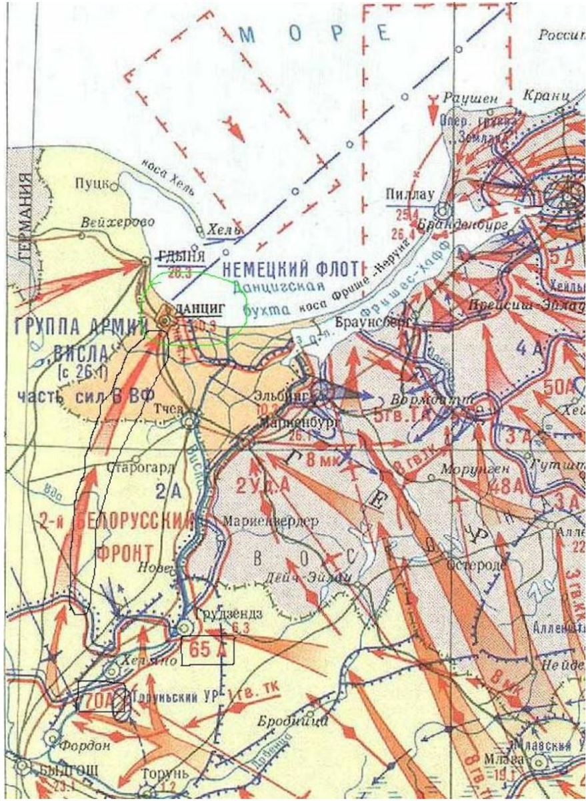
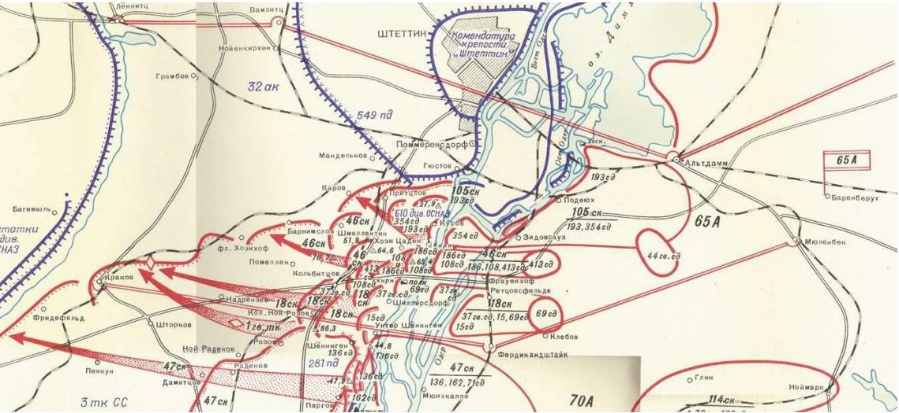
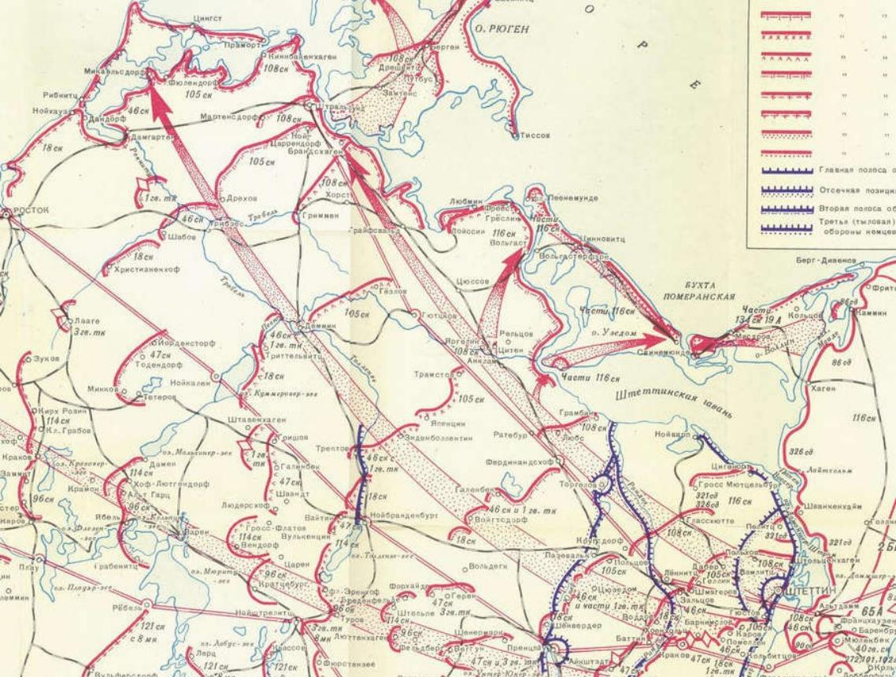

Chương 7

gày 5/1/1945, chỉ huy Tập đoàn quân 65, Đại tướng P.I. Batov, tới thăm sư đoàn tôi. Ông cùng Sư trưởng Dzhandzhgava đi kiểm tra các vị trí dự kiến sẽ dùng để chọc thủng tuyến phòng ngự Đức trong chiến dịch sắp tới. Các vị tướng mặc áo khoác da cừu nhưng chỉ đội mũ sĩ quan bình thường và không đeo cầu vai. Các sĩ quan tùy tùng vẫn ở lại Sở chỉ huy Sư đoàn trong khi tôi lái xe đưa các vị tướng ra tiền tuyến. Khi tôi lái, các tướng nói chuyện về cuộc tấn công sắp tới, về sự chuẩn bị cho nó và về ngày dự kiến khởi sự. Tôi nghe được Batov nói với Dzhandzhgava: – Anh biết không, quân Mỹ ở Ardennes đã kiệt sức và rút chạy như vịt tới 300km về tuyến sau. Churchill đã đề nghị Stalin: “Vì Chúa, hãy sớm bắt đầu cuộc tấn công của ông.” Chúng ta sẽ phải bắt đầu tấn công sớm một tuần. Phải sẵn sàng cho mọi thứ. Nhờ vậy, tôi biết được Tổng hành dinh đã xúc tiến ngày khởi sự cuộc tấn công của quân ta lên sớm hơn.[29]
Đột phá khẩu được xác định ở đối diện vị trí một trong những tiểu đoàn pháo chống tăng quân ta. Tôi dừng xe và trong khi các vị tướng nói chuyện với đám pháo binh. Tôi kẹp cặp đựng bản đồ của Sư trưởng vào dưới nách, đóng vai trò một sĩ quan tùy tùng, tôi tiến lại một giao thông hào dẫn ra tuyến đầu. Tôi đi xa khỏi chiếc Willy khoảng 200m thì dừng lại chờ các vị tướng và hi vọng họ cho phép đi cùng ra tuyến đầu. Các tướng rời khỏi đám pháo binh và đi về phía tôi, tướng Dzhandzhgava lấy lại cặp đựng bản đồ và bảo tôi quay lại chiếc Willy. Tôi xin được đi cùng ra tuyến đầu nhưng ông từ chối: “Không có việc gì cho anh làm ngoài đấy cả, và không có anh thì bọn Đức cũng đã có quá đủ mục tiêu ở đó rồi.”
Tôi quay lại xe chờ trong khi các vị tướng tiến hành cuộc quan sát, tiếp đó họ đi xem các tuyến hào, boongke và ụ súng để kiểm tra sự sẵn sàng và tinh thần binh sĩ. Trong thời gian chờ đợi, tôi ngồi với một vài đồng đội và nói với họ: “Các anh biết không, đang có một vụ náo loạn ở phía sau chỗ sở chỉ huy sư đoàn. Ai đó đã pháo kích vào chiến tuyến Đức nhưng cả trinh sát quân ta và bọn Đức đều không thể hiểu nổi những loạt đạn xuất phát từ đâu.” Tôi nhìn họ, cả đám mắt sáng lên, liếc nhìn nhau cười nhăn nhở rồi nói cho tôi biết ai đã bắn. Số là khi bọn Đức rút lui sau cuộc tấn công đầu tháng 10 của chúng, quân ta chiếm lĩnh một số vị trí cũ của địch để làm thành chiến tuyến mới. một số binh sĩ phát hiện một nơi đã từng là điểm đặt “Vaniusha”, loại pháo phản lực sáu nòng của bọn Đức có tiếng rít giống tiếng lừa kêu khi phóng đạn. Ngay khi nghe tiếng rít đặc thù của Vaniusha, quân ta lập tức kêu: “Anh em ơi, lũ lừa! Nấp mau!” Điều đó có nghĩa là những quả đạn phản lực đang nhắm vào chúng tôi và sau đó nổ tung. Khi bọn Đức rút chạy, chúng bỏ lại hàng đống loại đạn phản lực này, có vẻ chúng đã chuyển quá nhiều đạn đến vị trí đó. Nhóm binh sĩ đã phát hiện số đạn nghĩ bụng thử bắn chúng xem sao. Họ lấy một quả, đặt nó nằm lên thành công sự rồi bắn một phát tiểu liên vào ngòi nổ dưới đít quả rocket. Quả đạn phụt lửa và bay về phía chiến tuyến Đức, vì vậy bọn Đức không thể hiểu nổi cái gì đã bắn chúng và từ đâu.
Khi các vị tướng quay lại sau cuộc thăm viếng tuyến đầu, tôi kể với họ về “những kẻ phá hoại hòa bình” kể trên. Tướng Batov nói: “Tốt, cho chúng tôi xem.” Đám lính và viên trung sĩ của họ liền cho họ xem ngay tại chỗ cách họ “bắn” quả rocket. Xem xong Batov nói: “Tôi chẳng mang theo gì, chỉ có tấm Huân chương Sao Đỏ này. Tôi tặng thưởng nó cho trung sĩ vì đã tìm ra một “kỹ thuật” quấy rối địch. Phần thưởng dành cho các binh sĩ của anh sẽ thuộc trách nhiệm của Vladimir Nikolaevich (Dzhandzhgava)”. Tôi quay lại chỗ chiếc Willy, các vị tướng cũng tới sau đó, trong ánh hoàng hôn, chúng tôi quay lại Sở chỉ huy Sư đoàn 354.
Lời chú của Britton:
“Trong thời gian chiến sự tạm lắng sau khi cuộc phản công của quân Đức vào đầu cầu Narev tháng 10/1944 thất bại, cả 2 phía đều chuẩn bị cho cuộc tấn công của quân đội Soviet trong mùa đông sắp tới. Cuộc chạy đua trong việc chuẩn bị này tỏ ra không cân sức – việc tăng cường cho các đơn vị Đức trên Mặt trận phía Đông bị ép theo kế hoạch tấn công Ardennes trên Mặt trận phía Tây của Hitler. Các cuộc không kích dữ dội của quân Đồng Minh rút cuộc cũng đã bắt đầu làm hệ thống cung cấp nhiên liệu của nước Đức thiệt hại nặng. Lúc này, Tổng hành dinh đã trở nên cực kỳ lão luyện trong việc bố trí nhân lực và vật lực vượt trội tại các điểm dự định dùng làm đột phá khẩu, một trong số đó chính là trường hợp của Phương diện quân Belorussia 2 do Rokossovskii chỉ huy tại các đầu cầu ở Pultusk và Serotsk nằm về hai phía của đầu cầu Narev. một sĩ quan tham mưu Đức phục vụ tại một sư đoàn thiết giáp trong chiến dịch này sau đó đã tính ra rằng Phương diện quân Belorussia 2 đã vượt trội đối phương 7/1 về bộ binh, 18/1 về pháo và từ 10 đến 12/1 về tăng – thiết giáp trên đoạn chiến tuyến từ Pultusk đến Serotsk.”[30]
Tại các đầu cầu giữa Pultusk và Serotsk, Phương diện quân Belorussia 2 của Rokossovskii đã nhồi nhét tới hai Tập đoàn quân 65 và 70 cộng với Quân đoàn Xe tăng Cận vệ số một “Sông Đông”. Quân đoàn Xe tăng này thường hiệp đồng tác chiến với Tập đoàn quân 65 và giờ lại một lần nữa phối hợp trong cuộc tấn công sắp tới. Quan trọng hơn, Tổng hành dinh còn chuyển giao toàn bộ Tập đoàn quân 5 Xe tăng cho Phương diện quân của Rokossovskii mà quân Đức không hề hay biết. Tuy nhiên, Tập đoàn quân Xe tăng này chiến đấu ở phía bắc khu vực Tập đoàn quân của Litvin, tại đầu cầu Rozan, vì vậy mà mặc dù đây là lực lượng có đóng góp lớn vào chiến công của Phương diện quân Belorussia 2 trong chiến dịch Đông Phổ, nó đã không được đề cập trong lời kể của Litvin.
Trong các tuyến chiến hào đối diện với Phương diện quân Belorussia 2 của Rokossovskii cũng là một địch thủ quen thuộc – Tập đoàn quân 2 Đức, vẫn là cái Tập đoàn quân (chí ít là trên giấy tờ) đã từng bị đập tan ở sông Dnepr tháng 8/1943. Nhưng giờ đây Tập đoàn quân 2 Đức thậm chí còn yếu hơn xưa nhiều với phần lớn quân tăng cường là những thiếu niên hoặc người chưa qua huấn luyện. Các sư đoàn Đức đối diện đột phá khẩu của Tập đoàn quân 65 tại Narev là một phần của Quân đoàn 27 Đức. Theo thứ tự bố trí từ bắc xuống nam, chúng gồm các Sư 542, Sư 252 và Sư 35 Bộ binh. Tuyến phòng thủ của quân Đức quanh đầu cầu Pultusk tuy dày đặc nhưng lại chỉ có lực lượng phòng thủ mỏng. Tuyến thứ nhất do binh lính tự đào đắp gồm ba đường hào có chiều sâu phòng thủ từ 1,5km đến 2km. Hai km sau tuyến phòng thủ thứ nhất là tuyến thứ hai, đây là nơi đặt các công sự của pháo binh trực thuộc các sư đoàn. 2km-4km sau đó nữa là tuyến thứ ba với các đường hào được đào trước các hào chống tăng và trước các chướng ngại vật chống tăng. Tuyến phòng thủ thứ tư nằm cách tuyến đầu khoảng 12km, tại đó các tiểu đoàn công binh vẫn đang xây dựng trận địa.[31]
Các tuyến phòng ngự này được dựng lên để ngăn chặn bằng được cuộc tấn công của quân đội Soviet, người Đức đã rút ruột nhân lực để tăng cường cho chúng. Tuy nhiên, vào thời điểm tháng 1/1945, thật khó có thể cung cấp đủ người ở mọi chỗ. Ví dụ tại mặt trận Pultusk, Sư 252 Đức chỉ có hai trung đoàn với gần 1.000 sĩ quan và binh lính bảo vệ một đoạn chiến tuyến dài 12km.[32] Ban chỉ huy Tập đoàn quân 2 Đức có hàng loạt mối lo vì thực tế họ chỉ có duy nhất một sư đoàn làm dự bị, Sư 7 Thiết giáp, đang được bố trí ở khu vực Ciechanow là nơi tiếp giáp giữa các Quân đoàn 27 và 23 của Tập đoàn quân. Ngay trước cuộc tấn công của quân đội Soviet, theo tính toán của viên Sư trưởng, Sư 7 Thiết giáp chỉ còn khoảng 2/3 lực lượng tăng. Khoảng một nửa số tăng đó là loại Mk 5 “Panther”, nửa còn lại là loại Mk 4 cũ hơn. Ngay cả khi Sư trưởng đánh giá tinh thần đồng đội giữa các binh sĩ là “tốt”, sự thiếu hụt nhiên liệu và đạn dược vẫn sẽ cản trở hiệu quả chiến đấu của Sư đoàn.[33]
Kế hoạch của Tổng hành dinh đối với Phương diện quân Belorussia 2 của Rokossovskii là đột phá từ các đầu cầu ở Pultusk, Serotsk và Rozan, sau đó tiến theo hướng chung là tây – tây bắc và chiếm một vài đầu cầu qua sông Vistula ở giữa Marienburg về phía bắc và Kulm về phía nam. Từ đoạn này, mục tiêu hướng đến của Phương diện quân Belorussia 2 trở nên kém rõ ràng, Tổng hành dinh cho rằng quân Đức tại Đông Phổ sẽ vội vã bỏ chạy về phía bờ biển Baltic. Khi đó, Phương diện quân của Rokossovskii có thể có hai lựa chọn khác nhau là bao vây Đông Phổ hoặc tiến thẳng về Berlin. Tuy nhiên trong thời gian trước mắt, các tập đoàn quân 65 và 70 ở cánh phía nam Phương diện quân Belorussia 2 vẫn tiến theo hướng chung về phía tây, tiếp tục phối hợp với cánh phía bắc của Phương diện quân Belorussia một do Nguyên soái Zhukov chỉ huy cũng xuất phát từ Warsaw tiến về phía tây.
Tiến lên!
Ngày 10/1/1945, Sư 354 Bộ binh có vài sự thay đổi về chỉ huy. Đại tá Vorob’ev, Sư phó phụ trách chiến đấu và xây dựng trận địa được thăng chức và rời sư đoàn, Đại tá Strunin tới thay thế. Đại tá Grokhovskii, chỉ huy pháo binh sư đoàn, cũng được thăng chức lên sĩ quan cấp quân đoàn. Chạng vạng tối ngày 13/1, tôi đưa Sư trưởng và nhóm giúp việc của ông tới một điểm quan sát, nhóm đó gồm trung tá Os’kina chỉ huy hành quân, các sĩ quan chỉ huy trinh sát và pháo binh. Điểm quan sát đặt tại bìa rừng chỉ cách tuyến đầu 60m, không xa boongke của Tiểu đoàn Xung kích 25. Tôi lái xe đưa các chỉ huy đến giữa rừng rồi họ tự đi bộ đến điểm quan sát. Trước khi đi, tướng Dzhandzhgava lệnh cho tôi đem bữa sáng tới cho ông vào lúc 9h sáng mai, ngày 14/1. Khi các sĩ quan đã đi khỏi, tôi giúp một nhóm pháo thủ chống tăng đưa ba khẩu 76mm vào vị trí ngay trên tuyến đầu, tại đó họ có thể bắn thẳng vào các vị trí địch. Các pháo thủ này thường phải lăn pháo lên bằng tay nên họ rất sung sướng có được một cái đầu kéo như chiếc jeep của tôi. Trong vòng 1h, tôi đã kéo xong cả 3 khẩu pháo vào vị trí trên tuyến đầu. Đêm ngày 13 và ngày 14/1 không yên ả, không ai ngủ được mấy. Đại bác, pháo phản lực nhiều nòng “Katiusha” và “Andriusha” di chuyển tới tuyến xuất phát. Mọi người vào vị trí và chuẩn bị cho trận đánh. Các trung đoàn bộ binh tập trung đầy các tuyến hào tiền tiêu. Tâm trạng của mọi người – từ người lính bộ cấp thấp nhất đến vị tướng chỉ huy – đều phấn chấn: Tất cả đã sẵn sàng cho trận đánh quyết định.
Ta đã bình tĩnh chuẩn bị cho một cuộc tấn công nữa mà chúng tôi hy vọng sẽ là trận đánh cuối cùng của cuộc chiến. Các đơn vị nhận được trang bị mới và các binh sĩ được huấn luyện bổ sung để chuẩn bị cho trận đánh trong đó nhiều lần là huấn luyện bằng đạn thật. Đạn pháo HE được bắn loạn xạ vào các binh lính đang nấp trong hào, tưới đất đá và mảnh đạn lên các tuyến hào nên đã có nhiều người bị thương thậm chí mất mạng trong các lần huấn luyện đó. Quân ta cũng được huấn luyện kỹ năng chiến đấu chống xe tăng của bộ binh. Tại các cuộc huấn luyện này, binh lính núp dưới hào cho xe tăng phi qua. Những cỗ xe tăng còn vòng đi vòng lại qua các tuyến hào rồi mới tiếp tục lao về phía sau, chỉ khi đó các binh sĩ mới chồm dậy và ném những quả lựu đạn huấn luyện vào phần sau xe. Theo cách đó, những người lính học được cách chịu đựng sự sợ hãi đối với đạn pháo và xe tăng. Trước cuộc tấn công, số lượng các đơn vị trinh sát tăng lên từ ba đến năm lần và một cuộc thi đua đã được giao ước giữa họ. Những người đã chứng tỏ được mình trong các trận đánh trước đó và đã được tặng thưởng huân huy chương được hưởng một kỳ nghỉ trước cuộc tấn công tại hậu cứ sư đoàn. Cánh pháo binh thì cảm thấy kinh ngạc vì những yêu cầu đạn dược của họ không còn bị từ chối; ngược lại, họ còn nhận được nhiều đạn hơn cả số yêu cầu. Tất cả các đơn vị trên chiến tuyến đều được nhận quần áo ấm và các bữa ăn nóng sốt trước trận đánh. Tám giờ sáng ngày 14/1/1945, tôi phóng xe đến bếp và lần thứ ba thúc dục anh nuôi rằng bữa sáng của các sĩ quan đang bị chậm. Trận pháo kích chuẩn bị sẽ bắt đầu vào 11h và con đường dẫn ra tuyến đầu xuyên qua đầm lầy đang đậu đầy xe tăng. Chúng tôi đã không thể đến được chỗ các chỉ huy đúng giờ mà phải đợi cho đến khi những cỗ xe tăng tiến lên. Sasha đã thiếu sót gì đó và đến 10h30 chúng tôi mới mang được bữa sáng tới ban chỉ huy, điều đó khiến Sư trưởng nổi cáu. Sau khi ăn vội vàng, thiếu tướng Sư trưởng và các sĩ quan đều tới các vị trí của mình để chỉ đạo trận đánh. Sasha và tôi thu dọn bát đĩa chất nặng hai hộp carton rồi mỗi người bê một hộp chạy vội về chỗ chiếc Willy, nó đang đỗ cách boongke của Tiểu đoàn Xung kích 25 khoảng 300m. Sư phó phụ trách hậu cứ có lẽ sẽ đến đó.
Ôm đống bát đĩa, chúng tôi chạy xuyên rừng tới chỗ chiếc jeep. Khi đang chạy, tôi nhìn thấy những người lính cầm sẵn đạn trên tay đứng bên cạnh những khẩu cối, các pháo thủ người đứng bên hộp tiếp đạn, người nắm sẵn dây cò. Chạy được nửa đường tới chỗ chiếc Willy thì tôi nghe thấy tiếng hô đầu tiên trong ba lời hiệu lệnh từ những khẩu pháo mà tôi đã giúp kéo vào vị trí đêm qua. Chỉ một giây sau đó tôi đã nghe thấy những khẩu pháo đầu tiên khai hỏa và sau đó tất cả gầm lên, trộn lẫn với nhau thành một âm thanh khủng khiếp chưa từng thấy. Vậy là trận pháo chuẩn bị của quân ta đã bắt đầu.[34]
Đầu óc tôi nhanh chóng trở nên quay cuồng vì tiếng nổ đầu nòng của đại bác. Trong thoáng chốc tôi nghĩ về nơi phải nhận những quả đạn pháo này, chúng là cả một hạm đội và xếp thành ba hàng suốt dọc chiến tuyến. Tôi phải dừng lại trong một hố bắn của cối 82mm, đứng đó với đôi mắt đờ dại. Tay chỉ huy pháo đội cối, một thiếu úy tôi quen từ hồi anh ta còn trong lực lượng dự bị, nhận ra bản mặt thất thần của tôi, túm lấy thắt lưng trên tấm áo khoác da cừu của tôi kéo xuống hào. Không lâu sau đó, những viên đạn đại bác và cối địch phản pháo lại bắt đầu nổ tung xung quanh.
Sau khoảng 40 phút, tôi rời căn hầm của những chú lính cối hiếu khách để đến chỗ chiếc jeep, cần cho nó ra khỏi chỗ đỗ trước khi những cỗ xe tăng bắt đầu tiến lên. Tôi chạy tới chỗ chiếc xe và thấy Sasha đã ở đấy nhưng viên đại tá thì không thấy đâu. Chúng tôi chờ đợi lâu đến mức cảm tưởng như đó là một khoảng thời gian vô tận cho đến khi ông ta xuất hiện và chúng tôi lập tức lên đường quay về hậu cứ. Được độ nửa đường thì gặp một đoàn xe tăng đang tiến thẳng về phía mình, tôi buộc phải cho xe tạt sang lề phải và chạy ngay trên mặt đầm lầy đóng băng. Dọc đường, những cỗ xe tăng của Đại tá Pustukhov nối nhau tiến về phía tây ngay bên trái tôi. Dẫn đầu là 8 chiếc tăng quét mìn, đằng trước chúng được gắn những con lăn nặng có răng rộng hơn chiều ngang chiếc tăng 1m. Khi vượt qua bãi mìn địch, những con lăn nặng này sẽ kích nổ mìn. Mỗi khi có một quả mìn nổ, con lăn quét mìn lại bật nẩy lên trên khớp nối rồi rơi trở lại trước chiếc tăng vì sức nặng của chính nó.
Chúng tôi tiếp tục đi về phía đông trên mặt băng bẩn thỉu của đầm lầy cho đến khi gặp một đường hào của một pháo đội 152mm cắt ngang. Bị con hào chặn đường, tôi quay xe sang phải và chạy song song con hào, cố gắng tìm lại con đường ở quanh đây. Đạn pháo Đức đã bắn đầu bắn vào gần đó, chúng tôi bèn bỏ chiếc jeep và nhảy xuống hào. Chúng tôi mới bò dưới hào được một đoạn ngắn thì đạn pháo địch nổ tung xung quanh. Tôi nhìn quanh và thấy một chỗ chiếc xe của tôi có thể vượt qua chỉ cách khoảng 50m phía trước. Tôi quay lại và bò về chiếc Willy. Địch vẫn tiếp tục pháo kích bằng đại bác tầm xa, điều đó cho thấy rõ ràng chúng đã xác định được vị trí pháo đội 152mm nằm bên đường này để phản pháo. Khi đã đến được đoạn hào đối diện chiếc Willy, tôi dừng lại và phân tích kiểu bắn của địch. Đạn pháo của chúng rơi và nổ mỗi 30 giây. Tôi đang nằm bẹp dưới đáy hào nên nếu một viên đạn rơi trúng chiếc xe và hất tung nó đi cũng sẽ không làm tôi hề hấn gì. Tôi đã quyết định là sẽ quay lại với chiếc jeep và lái nó đến đoạn hào trống vừa phát hiện. Tôi bò đến chiếc xe, thò tay lên khởi động máy mà người không rời mặt đất rồi chờ cho quả đạn tiếp theo nổ. Nó đến nhanh chóng và hất mảnh đạn và đất đá đầy xung quanh. Ngay sau đó tôi nhảy vào trong xe và chạy dọc đường hào. Đằng trước và bên phải lại có những quả đạn nữa nổ rất gần, tôi có thể cảm nhận được hơi nổ bao quanh chiếc xe của mình nhưng không có thời gian để mà dừng. Chiếc jeep vẫn tiếp tục chạy và nhờ nó tôi vẫn còn có cái để che chở thân mình. Tôi ngoặt xe lao xuống đoạn hào trống, sau đó đánh gấp tay lái sang trái và vọt trở lại con đường. Chiếc tăng cuối cùng trong đoàn vượt qua ngay trước tôi, gã lính tăng vẫy tay chào tạm biệt trong khi cỗ tăng tiếp tục tiến ra tiền tuyến. Tôi đã lại được ở trên mặt đường trong một tình huống thật kích động. Giờ phải quay về sở chỉ huy và tìm kiếm những hành khách của mình. Tôi chạy chậm và đến được chỗ Sư đoàn phó đầu tiên, sau đó là Sasha nhảy ra từ vệ đường. Thế là cả tổ lái đã ngồi bên nhau và chúng tôi phóng về sở chỉ huy. Tại đó tôi kiểm tra kỹ chiếc Willy và tìm thấy 6 lỗ đạn, kính chắn gió trước cũng đã vỡ tan.
Ngay khi đợt pháo chuẩn bị vừa bắt đầu, khoảng 10 trinh sát thuộc đại đội trinh sát sư đoàn bò lên khỏi chiến hào tiền tiêu, sau đó đứng dậy và thẳng người đi bộ qua “no – man’s – land” về phía chuyến tuyến địch. Được khoảng hơn 100m họ dừng lại đợi một lúc cho đến khi pháo chuyển làn bắn vào tuyến hào thứ hai của địch. Ngay lúc đó, họ lao tới chiến hào địch, thậm trí trước cả khi những phát đạn pháo kích cuối cùng vào tuyến hào đầu chấm dứt, rồi quay trở về với những tên tù binh đầu tiên. Mấy tay tù binh vẫn còn sống nhưng trông chẳng khác gì những xác chết: Chúng vẫn không thể tin được rằng mình vẫn còn sống sau một trận pháo kích như vậy. Trận pháo kích chuẩn bị cuối cùng cũng kết thúc sau 1h rưỡi. Đại bác nhắm vào các vị trí chỉ huy và quan sát của địch, các kho hậu cần, các vị trí phòng thủ kiên cố. Katiusha và Andriusha bắn hủy diệt diện rộng trên toàn bộ khu vực quân địch bố trí các tuyến phòng thủ. Bộ binh tấn công chỉ nửa giờ sau khi trận pháo kích bắt đầu theo nhịp chuyển làn của pháo, tiến sâu dần vào khu vực của địch. Pháo lăn của bộ binh, pháo tự hành Su-76 và các đơn vị hỏa lực yểm hộ trực tiếp khác cũng tiến sát theo bộ binh. Họ nã đạn vào các ổ súng máy và pháo chống tăng địch, nhờ đó cho phép bộ binh tiến lên một cách thuận lợi. Trong ngày tấn công đầu tiên quân ta đã tới được tuyến phòng ngự thứ ba của địch.[35]
Ba giờ sau khi cuộc tấn công bắt đầu, các pháo đội đại bác hạng trung và tất cả các pháo đội cối đều di chuyển về phía trước để tái bố trí. Cuối ngày đầu tiên, các trung đoàn quân ta đã tiến được tới 8km. Sư trưởng cũng chuyển điểm quan sát về phía trước khoảng 6km. Trận đánh là khó khăn, điều kiện thời tiết xấu đã hạn chế hoạt động của của không quân yểm trợ cho quân ta. Sau ba ngày đánh nhau, lực lượng chính của quân địch mới bị đập tan. Sau khi thọc sâu thành công vào tuyến phòng ngự địch, sư đoàn tôi tăng tốc, tấn công vào các đơn vị bảo vệ hậu cứ vẫn còn mạnh của địch.
Lời chú của Britton:
“Ngày 18/1, Sư 354 Bộ binh đã tham gia đánh chiếm thành phố Plonsk thuộc Ba Lan. Quân Đức đã đặt mìn gần như khắp thành phố và trận đánh diễn ra ác liệt. một đoạn hào thậm chí đã đổi chủ tới sáu lần. Khi trận đánh kết thúc, Tổng hành dinh đã tặng danh hiệu “Plonsk” cho Trung đoàn bộ binh 1199 của Sư 354.”[36]
Trong 12 ngày tiếp theo, Sư đoàn tôi tiến được gần 200km. Thời tiết quang đãng, tuy giá lạnh nhưng khô ráo và có gió nhẹ. Giống như trong mùa hè vừa rồi, các đơn vị cơ động mũi nhọn dẫn đầu đoàn quân. Các đội cơ động này di chuyển suốt ngày đêm, không cho quân địch có thời gian dừng lại nghỉ ngơi hoặc củng cố vị trí phòng thủ. Không đủ lực lượng để bịt những lỗ hổng do quân ta chọc thủng, quân địch đã tung ra bất kỳ lực lượng nào còn trong tay để cố gắng làm chậm bước quân ta: Các tiểu đoàn cảnh vệ, Volksturm (dân quân) cùng đủ loại đơn vị trang bị nhẹ và huấn luyện tồi khác.[37]
Tại trại chăn nuôi
Khoảng một tuần sau khi cuộc tấn công bắt đầu, Sư đoàn tôi hành quân cơ giới theo sau một đơn vị đi trước. Chúng tôi nghỉ đêm trong điền trang của một người Đức giàu có và kinh ngạc trước những tiện nghi xa xỉ của nó. Sáng sớm hôm sau chúng tôi lại lên đường. Chỉ có Thiếu tướng Sư trưởng, sĩ quan tùy tùng, điện đài viên và nhóm cảnh vệ của ông cùng với tôi đi bằng chiếc jeep. Nơi chúng tôi tới là sở chỉ huy mới, nó vừa mới được cánh bộ binh Sư đoàn giải phóng vào lúc trưa.
Khoảng 9h sáng, chúng tôi bắt kịp phân đội đi trước của sư đoàn, họ đang tạm dừng để tăng cường pháo và một đội kỵ binh. Phân đội đi trước này đang ở trong một ngôi làng lớn nằm sát hàng rào một nhà máy rượu. Các binh sĩ đang ăn sáng. Ngay sau khi binh lính ăn sáng xong, Sư trưởng ra lệnh cho viên sĩ quan chỉ huy phân đội tiếp tục tiến theo hướng chỉ định ngay lập tức. Tướng Dzhandzhgava cũng muốn biết vị trí của đội kỵ binh. Chỉ huy phân đội báo cáo nhóm kỵ binh đã đi từ 1h trước theo đường tiến quân định sẵn và anh ta đang đợi thông tin từ họ. Tướng Dzhandzhgava nói không cần đợi thêm và lệnh cho anh ta tiếp tục tiến quân với hy vọng đuổi kịp đội kỵ binh hoặc bắt gặp họ trên đường trong trường hợp họ quay lại, nhờ đó ông có thể nắm tình hình phía trước theo hướng tiến quân. Chúng tôi rời làng và đi khoảng 6km mà không gặp tay kỵ binh nào nên dừng lại trên một con dốc nhỏ để quan sát xung quanh. Phía trước, cách khoảng 6km-7km về phía tây có một ngôi làng với khoảng 70 nóc nhà nằm hai bên một con đường độc đạo. Gần đó, khoảng 800m về phía chúng tôi có một nông trại. Chúng tôi có thể nhìn thấy những căn nhà lớn và nhà phụ, đó chắc là một trại chăn nuôi nhỏ với những kho cỏ và chuồng nhốt súc vật, nhà chứa nông cụ và cho người ở. Phần lớn nhà cửa xây bằng gạch với mái ngói đỏ. Chúng tôi không nhìn thấy đội kỵ binh đâu. Theo thông tin tình báo tối qua của các trinh sát, ngôi làng vẫn nằm trong tay địch. Dzhandzhgava ra lệnh sẵn sàng vũ khí rồi tiến về phía nông trại. Trước hết cần chờ nhóm kỵ binh rồi sau mới quyết định làm gì tiếp theo. Tôi hạ kính chắn gió xuống nằm ngang trên mui xe rồi đặt khẩu tiểu liên chiến lợi phẩm lên bảng đồng hồ, chĩa về phía trước. Tay điện đài viên cũng đã sẵn sàng với vũ khí cá nhân của anh ta, nhóm cảnh vệ có súng của họ và viên sĩ quan tùy tùng đã chuẩn bị sẵn một khẩu súng máy. Chúng tôi tới trang trại an toàn và lái xe vào sân trong, nhóm cảnh vệ bố trí quanh sân. Trong ngôi nhà chính có 2 người Ba Lan, họ rất hoảng sợ khi nhận thấy một viên tướng Soviet mặc áo choàng kiểu Cossack bước vào phòng nơi họ đang co rúm lại bên nhau. Những người Ba Lan nói một đại đội vận tải Đức với khoảng 150 xe ngựa / ô tô và 200 lính / sỹ quan đang ở trong ngôi làng phía cuối con đường. Theo lời họ, khoảng 20 phút trước có hai xe ngựa của bọn Đức vừa rời trang trại này. Từ những lời trao đổi của bọn Đức với nhau, những người Ba Lan nói, thì rõ ràng là bọn Đức đã lên kế hoạch bỏ làng và tiếp tục rút lui. Tuy nhiên không loại trừ khả năng bọn chúng có thể quay lại trang trại nên Dzhandzhgava ra lệnh lập một vành đai phòng thủ quanh nhà. Chúng tôi đặt khẩu súng máy trên một cửa sổ hướng vào làng và các cảnh vệ cùng một tay điện đài viên chiếm lĩnh các vị trí quanh sân. một điện đài viên khác liên lạc với Quân đoàn trưởng, ông này khiển trách sự thiếu thận trọng của Dzhandzhgava và lệnh cho ông rút khỏi trang trại. Tuy nhiên, Dzhandzhgava đã thuyết phục được Quân đoàn trưởng chấp thuận để ông giữ nguyên vị trí hiện tại.
Sau cuộc nói chuyện với Quân đoàn trưởng, Dzhandzhgava liên lạc với chỉ huy phân đội đi trước và lệnh cho một đại đội tăng cường nhanh chóng hành quân vào làng. Bất thần, tay điện đài viên thứ hai chạy vào báo cáo có một chiếc tăng thuộc loại gì đó không có tháp pháo đang tiến về trang trại. Chúng tôi chuẩn bị vũ khí chống tăng, đó là hai quả lựu đạn chống tăng, và sẵn sàng vào trận. Chiếc tăng tiến vào sân, hóa ra nó là một chiếc T34 nhưng không có tháp pháo, thay vào đó là một ụ súng máy. Chỉ huy kíp lái tăng nhảy ra khỏi xe – đó là quân ta. Đó là một chiếc tăng được hoán cải thành xe kéo của Quân đoàn Xe tăng một “Sông Đông”. Trưởng xe nói với tướng quân anh ta đang lái xe chạy loanh quanh tìm những chiếc tăng hỏng để tháo dỡ những bộ phận còn dùng được hoặc kéo chúng về sửa chữa. Tướng Dzhandzhgava thông báo tình hình cho trưởng xe và bảo anh ta ông rất muốn không cho một tên Đức nào sống sót ra khỏi làng. Tướng quân đề nghị trưởng xe lái vòng qua làng, xông vào từ phía tây để tiêu diệt bọn Đức bằng khẩu súng máy và cả bằng cách nghiến xích xe tăng lên chúng. Ngay sau khi chiếc tăng đi khỏi thì nhóm kỵ binh xuất hiện. Sư trưởng lệnh cho họ tấn công từ phía đông ngay khi nghe tiếng súng nổ ở phía tây ngôi làng. Kế hoạch diễn ra không gặp trở ngại nào. Trong vòng 20 phút toàn bộ hàng quân Đức đã bị tiêu diệt. Đám kỵ binh bắt sống khoảng 30 tù binh và giải đến chỗ Sư trưởng, gần một nửa trong số chúng là người Đức, số còn lại là người Nam Tư, Ba Lan và các nước khác. Vì thành công của trận đánh, Sư trưởng tặng thưởng kíp lái tăng những huân huy chương. Trong cuộc chiến này, các vị Sư trưởng được Soviet Tối cao Liên bang trao quyền tặng thưởng bất cứ ai có công trạng tới Huân chương Sao Đỏ nhưng riêng với sĩ quan dưới quyền thì chỉ được tặng thưởng tới huy chương “Za Otvagu”.
Graudenz và Vistula
Ngày 26/1, những chiến sĩ của sư đoàn đã đến được sông Vistula cách pháo đài Graudenz một chút về phía tây nam,[38] tại điểm dòng sông quay về hướng bắc để đổ vào biển Baltic. Sáng hôm đó, dưới sự che chở của màn sương mù dày đặc, các đơn vị thuộc trung đoàn 1199 và 2003 bộ binh cùng với một pháo đội 45mm đã thiết lập được một đầu cầu trên bờ tây con sông nhưng mặt băng quá mỏng để đưa xe tăng và pháo lớn qua.[39] Shvydkov, chỉ huy tiểu đoàn công binh chiến đấu, ra lệnh làm chệch hướng một con kênh gần đó cho nước chảy tràn lên mặt băng để khiến mặt sông đóng băng chắc hơn. Không may, thời tiết đột nhiên trở nên ấm hơn khiến mặt băng yếu đi và làm nản những nỗ lực chuyển toàn bộ Sư đoàn sang bên kia sông. Trong khi bộ binh giữ đầu cầu bên bờ tây, xe tăng và pháo binh sư đoàn vẫn phải ở lại bờ đông cùng với lực lượng hậu tuyến. Chúng tôi đã mất gần một tuần bên con sông Vistula trước khi có thể chuyển được tăng pháo qua sông. Trong khi chờ đợi điều kiện thời tiết thuận lợi hơn, sở chỉ huy Sư đoàn đóng ba ngày đêm trong một ngôi làng Ba Lan bên bờ đông cách đầu cầu không xa. Cánh lái xe chúng tôi ở trong ngôi nhà của gia đình Rakoshinskii người Ba Lan, ông ta ở đó cùng cha, vợ và cô con gái Vikhtia. Vikhtia cũng cỡ tuổi tôi và đang muốn học làm cô giáo. Tôi dành phần lớn thời gian ở bên Vikhtia. Cô ấy rất ngạc nhiên khi được gặp một người Siberi chính hiệu vì trước đây vẫn tưởng tượng người Siberi là loại nửa người nửa thú và vùng Siberi là một nơi biên cương xa xôi hoang dã. Chúng tôi nói chuyện nhiều với gia đình này – trước hết là về các nông trang tập thể vì những người Ba Lan rất sợ chúng tôi bắt họ vào làm ăn tập thể với chúng tôi. Vikhtia lúc nào cũng hát những bài tình ca bằng giọng rất hay, và đó là một trong số ít những ngày dễ chịu của tôi trong suốt cuộc chiến.
Vào những ngày cuối tháng 1, trong khi quân ta vẫn đang cố gắng chuyển các lực lượng còn lại qua sông Vistula, chúng tôi nhận được một mệnh lệnh kỳ lạ: “Dzhandzhgava, chuyển một trong các trung đoàn của anh trở lại bên này sông – một lực lượng khoảng 10.000 tên Đức đang di chuyển về hướng hậu tuyến Tập đoàn quân 65 dọc theo bờ đông.” Đây là số quân Đức đã chạy khỏi Torun và đang tìm cách vượt vòng vây.[40] Vào lúc đó, ba trung đoàn bộ binh của sư đoàn cùng một số pháo hạng nhẹ đã vượt sông Vistula nhưng lực lượng hậu tuyến và phần lớn pháo binh vẫn còn đóng trên bờ phải nằm ngay trên đường đi của bọn Đức. Dzhandzhgava ngay lập tức rút Trung đoàn Bộ binh 1199 khỏi đầu cầu qua sông Vistula và phối hợp với các đơn vị của Sư 193 Bộ binh cùng một số đơn vị khác tiêu diệt toàn bộ lực lượng Đức. Hơn 7.000 tên Đức đã bị bắt làm tù binh. Với việc gỡ bỏ được mối đe dọa này, chúng tôi đã rảnh tay quay lại với nỗ lực đưa các bộ phận còn lại qua bờ trái sông Vistula. Khi việc đó thực hiện xong, sư đoàn tôi tiến về phía bắc nhằm hướng Danzig. Khu vực phòng thủ Danzig nằm ngay trên đường tiến của quân ta và chúng tôi được lệnh phải tới đó trước khi quân địch kịp củng cố trận địa. Thời tiết trở nên ấm hơn, gần như mùa xuân mặc dù lúc đó mới là tháng 1. Chúng tôi dùng mọi cách để tiến nhanh nhất có thể. Pháo đài Graudenz đã ở phía sau nhưng chúng tôi phải để lại một lực lượng đủ để vây hãm thành phố và cuối cùng là buộc chúng đầu hàng.
Lời chú của Britton:
“Khi Tập đoàn quân 2 Đức rút qua sông Vistula, đơn vị mới được tăng cường cho nó là Sư 83 Bộ binh đã rút về Graudenz. Trong hai tuần đầu của tháng 1, Sư 83 Bộ binh cùng với cái gọi là Lữ đoàn Thay thế Herman Goering đã chống giữ thành phố như một đầu cầu tại bờ trái Vistula của Tập đoàn quân 2. Lực lượng phòng thủ thành phố chỉ có liên lạc duy nhất với đơn vị bạn là Sư 252 Bộ binh ở bờ bên kia sông Vistula. Cuối cùng, do bị ép mạnh Sư 252 phải rút về phía bắc. Ngày 15/1, Tập đoàn quân 2 lệnh cho Sư 83 bỏ Graudenz để rút lui. Tuy nhiên, Hitler bãi bỏ lệnh đó khi công bố Graudenz là thành phố “pháo đài” và cấm rút lui. Sau khi bị chỉ huy Tập đoàn quân 2 phản đối, Hitler chấp thuận cho một phần Sư 83 và Lữ đoàn Thay thế Herman Goering rút nhưng cũng lệnh cho mỗi đơn vị phải để lại một trung đoàn phòng thủ thành phố cùng với một số đơn vị Volksturm. Dù rất ngoan cố nhưng với quyết định phòng thủ sai lầm này, Graudenz cũng chỉ chống cự được cuộc vây hãm của quân Soviet thêm sáu tuần trước khi đầu hàng vào ngày 8/3 sau ba tuần lễ đánh nhau từ nhà này đến nhà khác trong thành phố.”[41]
Tại điền trang Bá Tước
Khi quân ta tiến về Danzig, tôi phải nói thêm rằng sở chỉ huy đã dừng lại 48h tại điền trang của một ông bá tước thực sự, ông ta lúc đó không ở đó mà đang phục vụ trong quân đội Đức. Đó quả là một góc thiên đường với một khu rừng trồng bao quanh, một bức tường đá vây lấy điền trang, một toà nhà ba tầng bằng đá trắng đứng sừng sững giữa sân, một nhà thờ Công giáo với cột đàn organ tráng lệ nằm bên cạnh tòa nhà chính. Khu điền trang hoàn toàn vắng lặng nhưng để phòng hờ, Kostia Alekhin và tôi vẫn lăm lăm súng ngắn khi đi kiểm tra căn nhà chính. Nó thật lộng lẫy, trong đó trưng bày những vũ khí xưa và những bộ giáp thời trung cổ. Có một bức chân dung đen trắng Hitler treo trên tường, Kostia đề nghị tiến hành một cuộc tập bắn bia nho nhỏ và chúng tôi làm liền. Mỗi người bắn ba phát nhưng không phát nào trúng được mặt Hitler, khi tôi đang chuẩn bị bắn phát thứ tư thì tướng Dzhandzhgava đi vào. Ông quát lác chúng tôi vì đã nổ súng bậy bạ rồi rút khẩu Mauser chiến lợi phẩm khỏi bao nã một phát vào bức chân dung, viên đạn găm chính giữa trán Hitler. Lại tiếp tục đi xem xét nhà thờ cùng với Kostia, chúng tôi thấy mọi thứ vẫn nguyên vẹn. Thật đáng ngạc nhiên vì bọn Đức bao giờ cũng cướp sạch các nhà thờ, mang đi hết những thứ có giá trị như tượng, đèn treo và đồ dùng mạ vàng. Chúng tôi không động vào thứ gì trong nhà thờ. một chiếc đàn organ khổng lồ được gắn trên tường, đường kính ống đàn lớn nhất phải hơn 30cm và cao hơn 10m. Kostia biết chơi piano và ngồi xuống trước phím đàn. Cậu ta gõ thử vài nốt nhưng không có tiếng động nào phát ra. Kostia bèn bấm một nút trên có ghi chữ “Motor” nhưng chẳng có động cơ nào khởi động: Ở đây làm gì có điện. Tôi đành phải ra chỗ cái cần phía sau để bơm khí vào cây organ. Khi đã có khí vào, Kostia thử chơi một điệu nhạc nhảy Nga quen thuộc là “Komarinskii” nhưng không ra sao cả, điệu nhạc nhảy sôi động không thích hợp với âm thanh trầm và dài của đàn organ. Tiếp đến chúng tôi chơi nhạc của Bach, âm thanh uy nghi của giai điệu đã làm Dzhandzhgava chú ý và đi sang nhà thờ. Ông đề nghị Kostia chơi bài hát Georgian được nhiều người biết là “Suliko”, Kostia hát bằng tiếng Nga còn Dzhandzhgava bằng tiếng Georgian. Sau đó Kostia chơi tiếp một điệu nhảy Georgian nổi tiếng, Lezginka, và Dzhandzhgava nhảy theo một cách xuất sắc! Tôi đã từng thấy ông biểu diễn điệu nhảy này lần đầu tại một buổi lễ của lực lượng SMERSH trong làng Vul’sk-Zatorsk, lần thứ hai tại lễ kỷ niệm ba năm thành lập sư đoàn, và lần thứ ba là khi đến thăm tướng Frolenkov.
Trong các tủ và ngăn kéo, chúng tôi tìm thấy rất nhiều quần áo xịn. Viên sĩ quan tùy tùng cho chúng tôi chọn vài thứ để gửi về cho gia đình làm quà và chúng tôi sung sướng làm theo. Tôi gửi hai bộ vét và hai chiếc áo khoác cho hai đứa em trai, chúng đang làm việc tại các nhà máy quốc phòng. Sau này, mỗi khi chúng tôi phát hiện được chiến lợi phẩm, chỉ huy lại cho phép gửi về nhà mỗi tháng một thùng đồ không quá 10kg. Tôi đã gửi về nhà một số đồ hậu cần, chủ yếu là quần áo vì trong thời chiến không tìm đâu ra cái thay thế cho những bộ quần áo sờn rách. Sau khi vượt sông Narev, chúng tôi đi xuyên qua đất nước Ba Lan mà hiếm khi gặp những người dân thường. Chúng tôi di chuyển liên miên và thường là chẳng có thời gian đâu mà làm phiền dân địa phương. Cũng có vài trường hợp một viên sĩ quan mất tích: Ai đó nghỉ qua đêm ở đâu đó, rớt lại phía sau và “biến mất” một thời gian.
Lời chú của Britton:
“Tình hình thay đổi khi Hồng quân tiến vào nước Đức. Ham muốn báo thù trỗi dậy mạnh mẽ ở phần lớn trong số họ, sau nhiều năm chiến tranh và sự chiếm đóng tàn bạo của người Đức đã hủy diệt vô số trang trại, làng mạc và gia đình người Liên Xô. Litvin có nói về chủ đề này nhưng không đưa ra bằng chứng cá nhân nào về những hành động tàn bạo chống dân thường như các nguồn tài liệu khác. Các bằng chứng từ cả hai phía dân thường và cựu binh Nga cho biết chỉ có các lực lượng tiếp quản đi sau mới phải chịu trách nhiệm về những hành động tàn bạo quá mức đối với dân thường. Nhiều người trong số họ vốn là tù nhân được vơ vét vào Hồng quân hoặc đã từng sống lâu dài trong vùng tạm chiếm, bị quân Đức chiếm đóng đối xử tàn bạo. Sự giáo dục và kỷ luật quân đội trong những đơn vị lính phần lớn là tân binh nghĩa vụ này cũng thấp hơn nhiều cánh lính cựu phục vụ tại các đơn vị tuyến đầu.”
Quân ta có cướp bóc không? Không rõ. Trong nhiều tính huống cần đánh giá một cách thận trọng vì đó thường chỉ là việc vượt quá quy định một chút. Không việc gì phải cướp bóc cả; sau tất cả, những người lính chỉ thỉnh thoảng cần một chút gì đó để ăn và uống cho thích đáng. Khi bạn tấn công, bao giờ cũng thu được chiến lợi phẩm. Chúng tôi đã bắt gặp rất nhiều kho hậu cần và hàng hóa của bọn Đức dọc đường tiến quân nhưng nhà bếp quân ta bao giờ cũng cung cấp gấp ba lần số cần thiết.
Lúc đó và sau này cũng có phụ nữ bị cưỡng bức, tôi xin kể lại một chuyện xảy ra gần Vistula, trong một khu định cư của người Đức. Chúng tôi định nghỉ đêm tại một ngôi làng ven đường. Chỉ huy trinh sát quyết định cho vài trinh sát tiến vào làng để chắc rằng không còn quân địch ở đó. Ông ta cử ba trinh sát thực hiện nhiệm vụ này – hai chiến sĩ và Masha, một phụ nữ người Cossack trong đội trinh sát. Họ rời đường cái vào làng và không tìm thấy tên lính Đức nào ở đó, chỉ có những căn nhà yên ắng. Trong một trong những ngôi nhà đó nhóm trinh sát tìm thấy một phụ nữ trung niên sống cùng hai cô gái trẻ, một trong hai cô là con gái bà ta, cô kia là con dâu vợ người con trai đang là sĩ quan Đức. Nhóm trinh sát hỏi họ vài câu rồi quay ra để về sở chỉ huy báo cáo. Khi cả nhóm đã ra ngoài hành lang ngôi nhà, Masha đột nhiên nói: “Lũ ngu! Các anh do dự cái gì thế? Chồng cô ta đang chiến đấu chống lại các anh mà các anh để cô ta lại một mình thế à? Hãy nhìn xem: Máu cô ta có pha sữa đấy!”[42] Hai tay trinh sát trao đổi vài câu ngắn gọn rồi hiếp trước hết là vợ viên sĩ quan Đức, sau đó là cô gái kia.
Vài giờ sau khi nhóm trinh sát quay lại sở chỉ huy sư đoàn, bà mẹ người Ba Lan xuất hiện tại sở chỉ huy cùng hai cô con gái và đòi gặp sư trưởng Dzhandzhgava. Ông đưa bà ta vào văn phòng và nghe hết câu chuyện về vụ hãm hiếp, sau đó lệnh cho toàn đội trinh sát xếp hàng trước sở chỉ huy để bà mẹ nhận mặt thủ phạm. Đi dọc hàng lính, người phụ nữ Ba Lan nhận ra hai kẻ đã cưỡng bức con bà và Masha. Dzhandzhgava lệnh cho họ bước khỏi hàng rồi đưa họ vào văn phòng mình để thẩm vấn, những người này đều nhanh chóng nhận tội. Dzhandzhgava mời những người phụ nữ Ba Lan tới và nói với bà mẹ: “Chúng tôi đã tìm ra những kẻ thủ ác. Theo luật của chúng tôi, tội ác phải bị trừng phạt nghiêm khắc. Hình phạt là hành quyết.” Nghe thấy từ “hành quyết”, người phụ nữ Ba Lan trở nên bối rối. Bà ta liếc nhìn hai cô con gái rồi hỏi: “Có cách nào để giữ cho họ khỏi bị bắn không?” Chính ủy Butsol trả lời: “Các đồng chí đó chỉ được sống trong trường hợp các con gái bà đồng ý lấy họ.” Cô con dâu của người phụ nữ Ba Lan đã lập gia đình, vì thế cô ta chỉ đơn giản là tha tội cho một trong hai kẻ hiếp dâm. Cô con gái còn lại miễn cưỡng chấp nhận sự dàn xếp này và chịu chia sẻ cuộc đời với tay trinh sát kia. Chúng tôi không kiếm đâu ra một linh mục, vì vậy sĩ quan kiểm sát viên quân sự được đề nghị đứng ra làm “chủ lễ” và anh ta nhanh chóng tuyên bố hai người là vợ chồng. Để hoàn tất vụ dàn xếp, Dzhandzhgava giao một xe ô tô cho đám trinh sát và cho phép họ tới nhà của người phụ nữ Ba Lan để cử hành lễ cưới. Sáng hôm sau, các trinh sát quay lại sư đoàn và tiếp tục tiến quân, để lại phía sau các cô gái Ba Lan.
Tại sao Masha lại thúc giục đồng đội tiến hành vụ hãm hiếp? Chắc chắn chị ta đã từng chứng kiến những gì bọn Đức chiếm đóng đã làm khi còn ở vùng Kuban trên sông Volga. Sự chiếm đóng của người Đức trên đất nước chúng tôi thật sự cực kỳ tàn bạo.
Tới Dazig
Lời chú của Britton:
“Quyết định chuyển hướng Phương diện quân Belorussia 2 của Rokossovskii về phía bắc nhằm hướng Danzig và khu vực ven biển Baltic là một quyết định gây tranh cãi ngay từ khi nó mới được đưa ra. Cả Rokossovskii và Zhukov đều phản đối việc phân tán các lực lượng đang trực chỉ Berlin. Khi các tập đoàn quân 65 và 70 cùng với Quân đoàn Xe tăng Cận vệ một “Sông Đông” ngoặt về hướng bắc, họ đã tách rời khỏi cánh phải Phương diện quân Belorussia một của Zhukov khiến Phương diện quân này bị hở sườn khi tiến về phía tây nhằm hướng Berlin. Việc đề ra quá nhiều mục tiêu tham vọng kiểu như vậy trong một chiến dịch đã từng gây những hậu quả tai hại cho Hồng quân trước đây. Chỉ có sự yếu kém của quân đội Đức vào thời điểm đó mới ngăn được những tai họa tương tự xảy ra. Mặc dù vậy, quyết định tách Phương diện quân Belorussia 2 khỏi Phương diện quân Belorussia một chắc chắn cũng khiến cho việc tiến quân của Zhukov chậm lại. Các nhà sử học chiến tranh cũng phê phán quyết định này. Nhà sử học Max Hastings mô tả việc chuyển hướng Phương diện quân Belorussia 2 tách khỏi cánh phải của Zhukov là “quyết định chiến lược tồi tệ nhất của Tổng hành dinh trong giai đoạn cuối cuộc chiến – và Tổng hành dinh ở đây đương nhiên chính là Stalin.”[43]
Phương diện quân Belorussia 2 trở nên lúng túng vì phải một mình tiêu diệt toàn bộ cụm quân Đông Phổ của lực lượng Đức và chiếm cứ Danzig. Tuy việc này thành công nhưng nó lại khiến cho Phương diện quân Belorussia một phải một mình chống chọi với một cuộc tấn công không mong đợi từ phía bắc. Ngày 15/1/1945, Tập đoàn quân Thiết giáp SS số 11 do Felix Steiner chỉ huy đã thử lợi dụng điểm hở sườn trên cánh phải Phương diện quân Belorussia một tại khu vực Stargard. Tập đoàn quân Thiết giáp SS 11 là một tập hợp hỗn tạp các sư đoàn SS đã suy giảm sức chiến đấu, trong số đó có rất nhiều các đơn vị lính ngoại quốc gồm các sư “Wallonian”, “Nederland” và “Nordland”. Với tổng cộng 300 xe tăng vào pháo tấn công, Tập đoàn quân Thiết giáp SS 11 vẫn còn là một lực lượng tấn công mạnh của quân Đức vào thời điểm đó. Tuy nhiên nó vẫn là quá yếu dù chỉ là để tấn công vào một mục tiêu nhỏ hơn. Sau khi đã thọc được vào cánh phải của Zhukov, Tập đoàn quân Thiết giáp SS 11 đã không thể khép miệng cái túi mà họ cố gắng tạo ra và Chiến dịch phản công “Sonnenwende” đã phải hủy bỏ chỉ sau ba ngày đánh nhau dữ dội. Mặc dù vậy, cuộc tấn công này cũng đủ để cảnh báo cho Stalin cần giảm nhịp độ tấn công của Zhukov và Konev vào Berlin. Tổng hành dinh đã lệnh cho Konev và Zhukov chỉ tiếp tục tăng tốc tiến về Berlin sau khi đã giải quyết mối đe dọa từ hai cánh tại Ponerania và Silesia.”
Tuyến đường tới Danzig phải vượt qua nhiều con sông và nhiều nơi đi xuyên qua rừng. Quân ta phải tiến từng km, qua từng đoạn sông suối và khu dân cư bằng những trận đánh với quân thù. Thời tiết thay đổi thất thường, tuyết đang tan và thỉnh thoảng có mưa – mà bây giờ mới là tháng một – cũng có lúc lại có tuyết rơi.
Lời chú của Britton:
“Tình trạng đáng báo động của quân Đức tại Prussia cuối cùng đã buộc Hitler phải chấp nhận chuyển một số sư đoàn đang bị giam chân trong cái túi Courland sang Đông và Tây Phổ. Tập đoàn quân 2 Đức, lực lượng đang dần tan rã dưới sức ép không ngừng từ các tập đoàn quân thuộc cánh trái của Rokossovskii, nhận được sự tăng cường đều đặn từ các sư đoàn đang rút khỏi Courland này. Với việc rút khỏi Graudenz, Tập đoàn quân 2 thu lại được Sư 83 Bộ binh, một trung đoàn của nó đã bị mất vì phải bảo vệ thành phố “pháo đài” này. Sau khi cánh trái của Phương diện quân Belorussia 2 vượt sông Vistula và chuyển hướng về phía Danzig, Tập đoàn quân 2 tiếp tục nhận được lực lượng tăng cường từ cái túi Courland, bao gồm các sư 32 và 215 Bộ binh cùng với Sư 4 Thiết giáp. Phần lớn các sư đoàn này đã không có đủ thời gian giành lại chỗ đứng chân mà chúng đã mất vào cuối năm 1944.
Với sự tăng cường từ Courland, Tập đoàn quân 2 cố gắng tổ chức một tuyến phòng ngự tại Tuchelder Heide, một vùng rừng lớn nằm về phía tây Vistula và phía nam Danzig. Địa hình tại đây cho phép bố trí các trận địa phục kích và phòng ngự có khả năng gây thiệt hại nặng cho quân tấn công. Nhưng các sư đoàn của Rokossovskii lại chọn tấn công vào các đơn vị Volksturm được tổ chức vội vàng, trang bị yếu kém và không có kinh nghiệm chiến đấu vốn được người Đức dùng chỉ đề củng cố phụ thêm cho tuyến phòng ngự. Mỗi khi có một vị trí do các đơn vị Volksturm trấn giữ bị chọc thủng là dẫn tới các sư đoàn chính quy lọt vào vòng vây. Do liên tục bị đe dọa bao vây và sức ép không ngừng từ Phương diện quân Belorussia 2, các sư đoàn chính quy của Tập đoàn quân 2 đã phải chạy khỏi hết vị trí này tới vị trí khác, tới tận Danzig và bờ biển Baltic.”
Đâu đó giữa sông Vistula và sông Cherek, chúng tôi nghỉ đêm trong một khu trại. Tay điện đài viên đặt máy xuống và đưa tai nghe cùng microphone cho sư trưởng. Tướng Frolenkov, Anh hùng Liên Xô và là sĩ quan chỉ huy Sư 193 Bộ binh ở bên trái chúng tôi đang gọi. Lúc đó là khoảng 5h chiều, trung đoàn cánh phải của Sư 193 đã bị tụt lại sau trung đoàn cánh trái của chúng tôi là Trung đoàn 1203 khoảng 10km và đang gặp nhiều vấn đề. Quân địch đã thọc vào lỗ hổng đó và đang cố gắng cắt rời để tiêu diệt trung đoàn đang tụt lại của Sư 193. Tướng Frolenkov đề nghị được giúp đỡ.
Hôm đó là một ngày ướt át, tình trạng đường sá tồi tệ. Các bộ phận của sư đoàn tôi đã dừng lại và giữ nguyên đội hình hành tiến. Dzhandzhgava lệnh cho chỉ huy Trung đoàn 1203 Bộ binh tấn công thọc sườn và bọc hậu quân địch bằng một tiểu đoàn và một pháo đội 76mm để giúp trung đoàn bên cạnh chọc thủng vòng vây. Tướng Frolenkov muốn cuộc tấn công bắt đầu vào 9h tối. Trước khi trận tấn công đêm bắt đầu, Dzhandzhgava muốn tất cả binh lính tham gia trận đánh được nhận thức ăn nóng và nghỉ ngơi 1h. Bảy giờ ba mươi phút tối, tôi được lệnh mang chiếc Willy tới. Chúng tôi phóng xe đến Trung đoàn 1203 để Dzhandzhgava có thể kiểm tra sự chuẩn bị cho trận tấn công đêm sắp tới. Chỉ có hai người chúng tôi đi với nhau – không sĩ quan tùy tùng, không hộ tống và không điện đài viên. Khi chúng tôi bắt đầu đi trời đã nhá nhem tối, bóng đêm đang tới gần nơi tiểu đoàn xung kích tập trung. Ngay trước khi chúng tôi tới ngôi làng mà tiểu đoàn nói trên được lệnh nghỉ lại thì thấy một hàng quân đang di chuyển – mọi người đều ướt như chuột, bẩn thỉu và mệt mỏi. Cả bốn khẩu đại bác của pháo đội 76mm đều ngập trong bùn ngay bên trái con đường dẫn vào làng. Mấy con ngựa đang cố gắng kéo một trong số các khẩu pháo lên khỏi bãi lầy một cách vô vọng. Thật là một cảnh tượng khốn khổ. Chúng tôi dừng lại gần chỗ mấy khẩu pháo và nhận ra hàng quân và pháo đội đang sa lầy này chính là tiểu đoàn được chỉ định tiến hành cuộc tấn công. Tướng quân hỏi đám pháo thủ: “Sao các anh lại mắc vào chuyện lộn xộn này?” một người lính già khoảng 45 tuổi trả lời: “Đồng chí Thiếu tướng, tiểu đoàn trưởng của chúng tôi vừa qua đây với vài quý cô Ba Lan và buộc các khẩu pháo phải tránh ra vệ đường. Đó là lý do chúng tôi bị sa lầy.” Trong khi tướng quân nói chuyện với các pháo thủ, tôi giúp họ kéo những khẩu pháo khỏi bãi lầy và đưa lên mặt đường rải sỏi. Khi tướng quân hỏi tiểu đoàn trưởng đâu, người lính già trả lời ông ta vừa lái xe qua khoảng bảy phút về phía đầu hàng quân của tiêu đoàn. Giờ thì cũng đã rõ là chẳng có thức ăn nóng nào cho binh lính.
Tướng Dzhandzhgava quay lại xe và lệnh cho tôi đuổi theo tiểu đoàn trưởng, đó không phải việc khó vì một chiếc ô tô chạy nhanh hơn xe ngựa nhiều. Viên tiểu đoàn trưởng đi một chiếc xe ngựa có mái che lộng lẫy, tôi đã nhìn thấy nó và từ từ lái xe lại gần, nhìn vào trong: Tiểu đoàn trưởng đang ngả đầu vào lòng một quý cô đi tất dài sáng màu, mặc váy ngắn phì phèo thuốc lá. Tôi vọt lên trước chiếc xe rồi dừng lại.
Ngay khi viên thiếu tá nhận ra tướng Dzhandzhgava, anh ta nhảy vội khỏi ghế và lao đến bên chiếc jeep: “Đồng chí Thiếu tướng…”. Dzhandzhgava có thể nói gì đây khi lời nói lắp bắp và hơi thở nồng nặc mùi rượu cho thấy rõ anh ta đang say bí tỉ. Thiếu tướng hỏi sắc lạnh: “Chỉ huy phó của anh đâu?” Rồi lệnh cho viên phó đó trình diện ngay lập tức. Sau đó Dzhandzhgava tiếp tục chất vấn viên thiếu tá, hỏi tiểu đoàn của anh ta đâu, bếp dã chiến cho binh sĩ đâu và anh ta đã chuẩn bị gì cho cuộc tấn công. Viên thiếu tá trả lời: “Không có bếp, nó ở đâu đó phía sau. Chúng tôi cũng không có đủ trang bị chiến đấu cho cuộc tấn công.” Đúng lúc này tiểu đoàn phó chạy tới cùng với một điện đài viên, viên đại úy này nói họ đang chuẩn bị cho cuộc tấn công nhưng không lập bếp ăn dã chiến nào để cung cấp bữa ăn nóng cho binh lính. Tướng quân lệnh cho điện đài viên thông báo cho trung đoàn trưởng của họ rằng viên tiểu đoàn trưởng đã bị cách chức chỉ huy. Chúng tôi liên lạc được với chỉ huy Trung đoàn 1203 và tướng Dzhandzhgava ra lệnh: “Gửi một xe nhà bếp đến đây ngay lập tức từ bất kỳ tiểu đoàn nào đã chuẩn bị xong bữa ăn nóng!” Thế rồi Dzhandzhgava lạnh lùng ra lệnh cho viên thiếu tá đang say xỉn hãy trình ông diện tại sở chỉ huy sư đoàn vào sáng mai. Sau khoảng 40 phút, một xe nhà bếp tới nơi và binh lính được ăn. Nhưng họ không thể làm khô người được: hôm đó mưa phùn suốt ngày. Sau một khoảng nghỉ ngắn, họ đã tiến hành thành công cuộc tấn công và hoàn thành nhiệm vụ dù rằng vì những gì kể trên cuộc tấn công đã chậm so với kế hoạch 1h. hi viên thiếu tá tới trình diện vào sáng hôm sau, Dzhandzhgava tháo luôn cầu vai của anh ta rồi ra lệnh: “Ba tháng tại tiểu đoàn xung kích!” (Tại Sư 354 Bộ binh chúng tôi có Tiểu đoàn Xung kích 25 dành cho các sĩ quan sai phạm và hai đại đội trừng giới độc lập 261 và 263 dưới quyền điều động trực tiếp của sư trưởng). Vậy là, chỉ vì để người ta biết được lúc mình uống và con đường mình đi lúc say, viên thiếu tá đã bị giáng chức và gia nhập tiểu đoàn xung kích trừng giới. Tướng Dzhandzhgava là một người cực kỳ tôn trọng kỷ luật. Ông không thể chịu nổi những kẻ hèn nhát và phạt nặng những kẻ say xỉn trong khi thi hành nhiệm vụ (thật ra ông không quan tâm nếu một người lính thường phạm những lỗi đó, nhưng phạt nặng các sĩ quan).
Quy định của Hồng quân là thuộc cấp phải tuyệt đối tuân lệnh, nhưng tất cả các chỉ huy và sĩ quan tôi từng phục vụ và chiến đấu dưới quyền đều cư xử đúng mực và tôn trọng cấp dưới. Tất nhiên là cũng có một số tên bạo chúa ti tiện nhưng tôi chưa từng phải liên quan trực tiếp với kẻ nào như vậy. Tôi nhớ có một tay trung úy già ở pháo đội bên cạnh hồi còn là lính pháo binh, một tay người Belorussia, thích quát to: “Tôi đã ra lệnh! Đó là mệnh lệnh!” Tất nhiên, mọi sĩ quan đều ra lệnh, nhưng theo kinh nghiệm cá nhân của tôi họ thường ra lệnh một cách hợp lý, lịch sự và không bao giờ với vẻ ngạo mạn. Chúng tôi thực hiện những mệnh lệnh kiểu đó nhanh chóng hơn. Thông thường, các vị chỉ huy của tôi là người tốt, xuất thân công nông và thăng tiến dần trong quân đội. Hai trung đoàn của sư đoàn tôi dễ dàng tiến tới cách Danzig 20km nhưng Trung đoàn 1199 đã phải dừng lại trước một quả đồi nhỏ do một đơn vị địch cố thủ. Dzhandzhgava cho trung đoàn trưởng Piatenko thêm một đêm để chiếm quả đồi và nói với ông ta: “Chiếm cái gò đó bằng bất cứ giá nào!” Tối hôm đó, Piatenko tập hợp một đội trinh sát tình nguyện, họ bí mật bao vây quả đồi trong bóng đêm, bò đến gần chiến hào quân địch rồi bất ngờ xung phong ào ạt. Họ nhanh chóng khuất phục quân địch: chỉ có 72 tên phòng thủ quả đồi, họ để 30 tên được sống, chỉ bắt làm tù bình. Sáng hôm sau khi tới quả đồi, chúng tôi thấy ở đó chả còn ai ngoại trừ vài lính thông tin đang kéo đường dây. Trung đoàn 1199 Bộ binh đã chiếm quả đồi rồi đi ngay. Chúng tôi đuổi theo trung đoàn và khi đuổi kịp thì thấy người ta đang kéo một số tù binh ra khỏi hàng. Chúng là những lính Vlasov đã bị bắt sống trong trận đánh đêm qua.[44] Piatenko đang đi dọc hàng tù binh, trong số đó có năm hay sáu tay người Uzbek. Tôi không rõ chuyện gì đã thực sự xảy ra nhưng sau đó nghe những người chứng kiến kể lại rằng khi Piatenko đi dọc hàng tù binh, ông ta nhận ra một trong số họ là bạn học cũ. Đúng lúc Piatenko vung tay tát kẻ đó thì một tay Uzbek khác bất thần rút khẩu súng ngắn giấu trong người (rõ ràng đám tù binh đã không bị khám người cẩn thận) và bắn một phát vào Piatenko. Phát đạn trúng Piatenko nhưng chỉ gây một vết thương phần mềm. Chúng tôi phóng đến chỗ đó trên chiếc Willy và Dzhandzhgava nhận ra những người Uzbek. Ông đã từng gặp vấn đề với lính người Uzbek trong thời gian diễn ra trận Kursk, nhiều lính Uzbek quân ta làm nhiệm vụ trinh sát đã chạy sang phe địch.
Có hai khẩu súng máy đặt gần đó và tướng Dzhandzhgava bước tới một khẩu, nã một loạt đạn dài vào đám tù binh Vlasov. Cả đám nằm lăn ra đất.
Dzhandzhgava gầm lên: “Đứng dậy! Quân hèn hạ thối tha! Chúng mày không được phép chết như những người bình thường!” Dzhandzhgava đã chỉ bắn sượt qua đầu bọn tù binh vì lúc này đã có lệnh chính thức cấm hành quyết tù binh. Tối hôm đó khi chúng tôi quay lại chỉ huy sở của Dzhandzhgava, một kiểm sát viên quân sự đã có mặt ở đó, đang chờ ông. Tay kiểm sát viên hỏi: “Thế nào, Dzhandzhgava, có phải hôm nay ông đã hành quyết cả đống tù binh không?” Dzhandzhgava giải thích chuyện gì đã xảy ra, tay kiểm sát viên im lặng nghe rồi hỏi: “Còn tay Piatenko thuộc cấp của ông, ông ta đã làm gì?” Ngay đêm đó, để đề phòng, Dzhandzhgava gọi Piatenko đến rồi viết cho ông ta một lệnh thiên chuyển về Moscow theo học tại một viện nghiên cứu quân sự. Vượt qua sự kháng cự của bọn Đức và đồng minh của chúng, vượt qua điều kiện thời tiết khốn nạn và tình trạng đường sá tồi tệ, vượt qua cả những dòng sông cả bé lẫn to, chúng tôi đã tới khu vực phòng thủ “pháo đài” Danzig, lúc này do Quân đoàn 27 trực thuộc Tập đoàn quân 2 Đức bảo vệ. Chúng chính là lực lượng đã đánh nhau với chúng tôi suốt từ đầu cầu qua sông Narev tới đây.
Lời chú của Britton:
“Rokossovskii đã rất kiên quyết không dừng lại trước Danzig khi Phương diện quân Belorussia 3 gặp vấn đề ở Konigsberg. Ông đã quyết định tấn công Danzig ào ạt bằng Tập đoàn quân 65, Tập đoàn quân Xung kích 2 và một số bộ phận khác của Phương diện quân Belorussia 2. Tập đoàn quân 65 đã tấn công qua vùng rừng phía tây thành phố hướng vào khu vực ngoại ô Emaus.”
Lúc này, lực lượng của các trung đoàn đã mỏng tới mức nguy hiểm. Sư trưởng cố gắng tăng cường các đơn vị tuyến đầu nhưng thậm chí ngay cả sau khi được tăng cường mỗi trung đoàn cũng chỉ có khoảng 40% quân số theo quy định. Tuy số chiến thắng của quân ta nhiều không đếm xuể nhưng đều phải dựa vào sự khéo léo hoặc hỏa lực yểm trợ. Thay vì 3.000 người cho mỗi trung đoàn, giờ chỉ còn lại 700-800, các tiểu đoàn teo lại chỉ bằng cỡ đại đội (120-170 người). Tuy nhiên hỏa lực pháo binh thì ngày càng mạnh, giờ chúng tôi có thể quyết định trận đánh bằng pháo, nếu sức phòng ngự của bọn Đức mạnh, quân ta sẽ tập trung nã đại bác vào đó.
Những cỗ xe tăng của Quân đoàn Xe tăng Cận vệ một “Sông Đông” cũng đóng góp to lớn khi chúng tôi đánh chiếm các ổ đề kháng của địch. Với sự cố gắng của họ, quân ta đã chọc thủng được vòng ngoài tuyến phòng ngự Danzig và tiến sát thành phố. Đây là những gì một tên sĩ quan tham mưu Đức của Quân đoàn 27 bị bắt làm tù binh đã nói trong cuộc thẩm vấn: “Nhiệm vụ của quân đội chúng tôi chỉ cứng nhắc là phòng thủ. Cuộc tấn công của các anh gây nhiều bất ngờ cho chúng tôi. Bản thân tôi đã nghĩ và được báo cáo rằng Tập đoàn quân 65 Nga quá yếu để có thể tấn công liên tục qua hàng loạt vị trí mà không có tăng cường hoặc các hình thức nâng cao sức mạnh khác. Tuy nhiên, các anh đã vào trận với hàng quân đoàn xe tăng hạng nặng và cục diện lập tức thay đổi bất lợi cho chúng tôi.
Danzig
Để xác định chính xác đâu là điểm kết thúc vùng ngoại ô và bắt đầu thành phố thực sự là không thể. Toàn bộ vùng bờ vịnh Danzig trên biển Baltic từ cửa sông Vistula đến Mũi Khel’ đều dày đặc khu dân cư mà chẳng có ranh giới hay khoảng trống nào. Vì vậy, ba thành phố ven biển Danzig, Sopot và Gdynsk hợp lại thành một đô thị khổng lồ nằm dọc bờ biển với chiều dài khoảng 45km. Sở chỉ huy Sư đoàn dừng lại đóng tại khu vực ngoại ô Emaus của Danzig. một hải cảng lớn, một căn cứ thủy quân và một pháo đài bất khả xâm phạm bằng gạch đá với tường dày, đường hầm và công sự – đó chính là Danzig.[45] Lực lượng phòng thủ Danzig được yểm trợ bằng hải pháo từ các tàu chiến của hạm đội Đức đang đậu trong vịnh. Tuy nhiên không quân Đức tại đây yếu và ít có khả năng gây phiền phức cho quân ta. Ngược lại, không quân ta là bá chủ tuyệt đối vùng trời Danzig. Tại đây lần đầu tiên tôi được thấy một cuộc oanh tạc đường không ồ ạt. Đầu tiên là các máy bay ném bom và cường kích mặt đất IL-2 “Shturmovik” bay theo đội hình cấp sư đoàn và quân đoàn. Khoảng 60-80 chiếc tiêm kích yểm trợ cho mỗi đợt ném bom như vậy chống lại các máy bay tiêm kích địch.
Lúc đó khi không phải dùng điện đài để trao đổi, cánh điện đài viên thích chuyển sang tần số của các máy bay ném bom nghe họ nói chuyện. Các chỉ huy phi đội thông báo vị trí, hướng, mục tiêu các loại – một số tấn công tàu Đức, số khác đánh vào bến cảng hoặc cầu tàu, số khác nữa ném bom thẳng vào thành phố, những nơi tập trung quân địch và các mục tiêu dưới đất khác. Trận chiến trong thành phố có nhiều khó khăn và mất mát. Quân địch được che chở trong các tòa nhà vốn được chuẩn bị sẵn cho một cuộc phòng thủ lâu dài. Những bức tường đá dầy của các tòa nhà trong thành phố chịu được thậm chí cả đạn pháo lớn nhưng dù sao những phát đạn cũng đủ để khiến quân địch chạy ra. Thay vì sử dụng các tiểu đoàn hoặc đại đội thông thường, Sư trưởng thiết lập những nhóm xung kích đặc biệt. Mỗi nhóm gồm một trung đội bộ binh, hai đến bốn pháo tự hành, một vài chi đội công binh và đôi khi thêm một vài đội súng phun lửa. Chiến thuật này đã thành công trong việc đánh chiếm từng tòa nhà, từ tầng này đến tầng kia, từ phòng này sang phòng nọ. Chúng tôi cũng luôn phải lăn pháo hạng nặng tới gần các tòa nhà để nã đạn thẳng vào chúng. Chiến thuật xung phong của quân ta thường như sau: Đám lính trang bị tiểu liên (avtomatchiki) vào vị trí chuẩn bị tấn công. Pháo binh bắn thẳng vào các cửa sổ tầng dưới cùng trong khi avtomatchiki bò tới gần các lối vào. Khi các avtomatchiki đã tới được cách tòa nhà 15m pháo binh chuyển sang bắn tầng hai, cùng lúc các avtomatchiki xông vào nhà quét sạch tầng một. Tiếp đó pháo binh sẽ nâng lên bắn tầng ba trong khi bộ binh tiến lên quét nốt những tên địch còn sót lại ở tầng hai và cứ thế lên cao dần. Các máy bay ném bom quân ta đã phá hủy nhiều tòa nhà ở Danzig, trước hết là những tòa nhà mà quân địch trú đóng, trụ sở của quân đội, kho hậu cần và cả các cơ sở công nghiệp quân sự. Sư trưởng thường xuyên đi bộ đến các vị trí quan sát vì gần như không thể đi bằng ô tô: tất cả các con đường chính trong thành phố đều bị gạch vụn phủ kín. Bọn Đức cũng thường nhanh chóng phát hiện sự di chuyển của xe cộ để gọi pháo.

Bản đồ đánh chiếm Daniz. Khoanh đen chỉ hai tập đoàn quân 65 A và 70 A. Cái vòng dài mầu đen là hướng tiến quân đánh vòng phía tây của tập đoàn quân 65 vào hướng Daniz. Tập đoàn quân 70 thì chiếm cảng Gdanhia (phía trên Daniz) Thành phố Daniz khoác màu xanh lá cây.
Tôi vẫn nhớ rõ đạn pháo đã phá tan những bức tường nhà ngay trước mắt tôi như thế nào. Nhà sập cũng là một mối nguy hiểm khác trong thành phố. Hai lần tôi đã chứng kiến cảnh đổ nhà khi đang lái xe quanh khu vực quân ta đã chiếm được, một trong số đó là tòa nhà ngay sát cạnh tòa nhà hội đồng thành phố. Tôi cũng đã thoát chết trong một lần khác, khi đang chạy chầm chậm trong một hàng xe cộ trước một tòa nhà đã rệu rã vì đạn pháo thì thình lình nó đổ sập xuống chỉ 5m trước tôi và nghiền nát một ụ đại liên phòng không bên dưới. Vì vị trí của tôi là tài xế nên không có nhiều việc để làm trong thời gian đánh nhau, tôi bèn xin phép sĩ quan tùy tùng cho mang chiếc jeep đến đại đội sửa chữa của sư đoàn để sửa nhưng anh ta không đồng ý mà chỉ cho phép nghỉ để sửa xe sau khi hạ được Danzig. Vì sĩ quan tùy tùng không cho phép, tôi đành cố gắng tự giải quyết những vấn đề của chiếc xe nhưng riêng hệ thống lái thì dù tôi đã cố hết sức vẫn không được đảm bảo, chiếc xe có thể mất lái bất kỳ lúc nào. Tầm 25/3, sở chỉ huy sư đoàn chuyển vị trí tới đóng tại tòa nhà hạ viện. Cuộc tấn công cuối cùng của ta vào thành phố bắt đầu ngày 26/3. Cuối ngày 27/3 chúng tôi đã tiến được vào trung tâm thành phố. Sư 354 của tôi tiến theo các đường Weinbergstrasse và Karthauserstrase tới tận bờ con sông cắt đôi thành phố. Tối 27, Sư trưởng báo với tôi là ông muốn đến một điểm quan sát vào 9h sáng hôm sau. Chiếc Willy phải sẵn sàng vào lúc đó và rất có khả năng chúng tôi sẽ phải đi dưới làn đạn địch.
Sáng hôm sau, một nhóm phối hợp hành động đầy đủ trèo vào chiếc jeep: Sư trưởng, tham mưu trưởng, chỉ huy tình báo, các điện đài viên và cảnh vệ. Chúng tôi đi được khoảng nửa đường an toàn nhưng ngay khi vào tầm bắn của địch thì những quả đạn pháo bắt đầu nổ tung bên trái tôi. Tôi phóng xe đi được thêm khoảng 200m dưới làn đạn thì bất đồ Dzhandzhgava lệnh cho tôi rẽ phải. Vô lăng quay một cách dễ dàng quá mức nhưng chiếc Willy thì vẫn tiến thẳng về phía trước với những quả đạn pháo địch nổ tung xung quanh. Tôi hiểu rằng chiếc xe đã mất lái và đạp phanh. Tất cả mọi người nhảy khỏi chạy tới núp dưới mái vòm một tòa nhà cao tầng. Tướng quân hỏi tôi cái gì đã xảy ra và tôi báo cáo lại việc viên sĩ quan tùy tùng đã không cho phép tôi mang xe đi sửa. Người sĩ quan tùy tùng đã bị kỷ luật vì vụ này nhưng tôi cũng không cảm thấy mình có một hành động anh hùng cho lắm. Giao một trong số các cảnh vệ cho tôi toàn quyền điều động, tướng quân và các sĩ quan khác đi bộ đến điểm quan sát trong khi tôi và người cảnh vệ ở lại bên chiếc Willy. Bằng nhiều cách chúng tôi đã đưa được chiếc xe về đại đội sửa chữa của sư đoàn. Dọc đường, chúng tôi tạt vào sở chỉ huy lấy một ít xì gà, thuốc lá, kẹo và một số thứ chiến lợi phẩm khác chưa sử dụng để mang cho các chàng trai của đại đội sửa chữa. Trên đường ra khỏi thành phố, chúng tôi nhìn thấy một nhóm lính đang đứng quanh một tòa nhà lẻ loi, nhìn bộ dạng họ thì rõ là trong nhà có hầm rượu. Chúng tôi đổ vào thùng tới 20 lít champagne để uống dần và cầm thêm vài chai vang. Chúng tôi tiếp tục lên đường, thỉnh thoảng lại dừng vì lý do này khác, một trong các lần đó là vì một đơn vị lính Ba Lan đang dàn trận. Trong trận đánh giải phóng Danzig, một lữ đoàn tăng của quân đội Ba Lan (Lữ đoàn Xe tăng một Ba Lan) chiến đầu cùng chúng tôi. Lữ đoàn này được đặt danh hiệu “Những người hùng của Westerplatte”, chỉ huy là một ông đại tá Mamotin nào đó. Lữ đoàn có rất nhiều lính nói tốt tiếng Nga và phối hợp với họ khá dễ dàng. Họ chiến đấu ở vị trí sát bên tay trái sư đoàn tôi trong nhiều trận đánh. Chúng tôi phóng xe ra khỏi thành phố, đường nhựa chuyển thành đường nông thôn lát đá. Thật khó chịu nếu phải bò xuống dưới chiếc xe, trên mặt đường nhớp nháp đầy phân súc vật này để siết lại thanh kéo tay lái, vì vậy chúng tôi quyết định cứ đi mà không lái. Con đường đã bị bánh xe xẻ thành rãnh sâu nên nếu chúng tôi cứ đi theo những rãnh đó sẽ không bị chệch ra ngoài. Để rẽ chúng tôi dùng một cái cọc gỗ sồi rút từ một hàng rào, khi đó tôi sẽ dừng xe để chú cảnh vệ trèo lên đầu xe, chống một đầu cọc vào mặt trong một trong hai bánh trước rồi tì vào khung xe mà bẩy từ từ cho bánh xoay về hướng mình muốn đi.
Chúng tôi đến được đại đội sửa chữa an toàn vào tối hôm đó, khi mọi người đang chuẩn bị bữa tối. Ai nấy đều cười ầm lên khi chúng tôi đánh xe vào với một “người cầm lái” trên đầu xe (chính là chú cảnh vệ ngồi trên nắp máy). Trước những kẻ đang cười cợt mình, chúng tôi phóng xe diễu một vòng tròn vành vạnh đầy oai vệ rồi đỗ xịch ngay cạnh xưởng sửa chữa. Qua ba ngày được tướng quân cho nghỉ để sửa xe, tôi đã hoàn thành mọi sửa chữa cần thiết cho chiếc Willy. Giờ thì tôi có thể lái thoải mái trong ba tháng tới.
Ngày tàn của cụm quân Đông Phổ
Khi tôi trở lại Danzig thì trận đánh chiếm thành phố đã kết thúc. Sở chỉ huy sư đoàn rời đến khu vực suối nước khoáng trong thành phố để chỉ huy binh lính mới đây còn đánh nhau tại một vũng neo tàu. Sư đoàn đã tung vào trận cả đại đội huấn luyện do Đại úy Vasillii Vasilevich Grechukha chỉ huy. Đại đội này luôn nằm dưới sự chỉ huy trực tiếp của Sư trưởng và ông chỉ dùng nó khi tình thế đã đến lúc bắt buộc. Đại đội vừa ngăn được một cuộc tấn công dữ dội của bọn Đức, chúng định thọc ra bờ biển với hi vọng có thể di tản bằng đường thuỷ. Trong một công viên um tùm cây cối nằm ven biển thuộc khu vực trách nhiệm của sư đoàn tôi, quân địch tập trung tới 5.000 xe quân sự và cả xe dân sự có khả năng dùng vào mục đích quân sự nhằm di tản chúng vào sâu trong nội địa. Tuy nhiên cuộc tấn công mạnh mẽ của ta và tiếp theo đó là cụm quân Đông Phổ bị tách rời khỏi nước Đức đã ngăn không cho chúng di tản số xe này. Trong số xe chiếm được có xe tải và xe con thuộc đủ các nước châu Âu, Mỹ và thậm chí cả xe Nga; xe tăng và pháo tự hành; xe buýt và xe điện bánh hơi; xe đầu kéo và đủ loại xe cộ khác. Tất cả số xe này đều để trần dưới những tán cây, phần lớn chúng vẫn trong tình trạng tốt nhưng tất cả đều không có nhiên liệu. Các trận oanh tạc của không quân ta đã ngăn không cho tàu địch vào cảng mang số xe này đi. Đại tá Mamotin, chỉ huy Lữ đoàn Tăng một Ba Lan, tới gặp tướng Dzhandzhgava đề nghị được chọn một số xe cho lữ đoàn của ông. Rất nhiều sĩ quan, chuyên gia và thủy thủ của Hải quân Đức đã bị thộp tại quân cảng, trong số đó có cả thủy thủ đoàn của nhiều tàu ngầm Đức đang được sửa chữa ở Danzig. Tất tật đám đó cỡ 6.000 người. Chỉ huy quân đội Đức đã hi vọng di tản số người này bằng tàu ngầm nhưng Quân đoàn 105 Bộ binh ta đã làm chấm dứt cố gắng này. Trong cảng mọi người đều trở thành tù binh và mọi thứ đều trở thành chiến lợi phẩm.
Ngày 30/3/1945, Moscow bắn pháo hoa chào mừng việc đánh chiếm Danzig, Sopot và Gdynsk. Stalin gửi điện cảm ơn những người lính của tướng Dzhandzhgava đã chiến đấu xuất sắc để chiếm được Danzig (nay là Gdansk). Chiều ngày 3/4, tướng quân, Alekhin và tôi đánh xe đến bờ cảng Danzig cách sở chỉ huy không xa. Xung quanh thật tĩnh lặng và chúng tôi muốn đánh dấu việc mình đã đi và đã đến Danzig bằng cách tắm biển ở đây! Nhưng nước quá lạnh khiến chúng tôi lập tức nhảy lên bờ. Vậy là kết thúc cuộc tiến công của quân ta bắt đầu từ đầu cầu Pultusk – Serotsk trên sông Narev và kết thúc ở bờ biển Baltic, tại thành phố pháo đài Danzig. Đó cũng là dấu chấm hết cho cụm quân Đông Phổ của quân đội Đức, giờ thì quân địch chỉ còn mỗi việc cố ngăn quân ta bao vây và nghiền nát chúng ở Berlin. Trong trận Danzig, quân ta đã bắt sống 10.000 sĩ quan và binh lính địch, 140 xe tăng và pháo tự hành, 356 đại bác và đủ thứ tài sản khác như lương thực và trang thiết bị.[46]
Tới Stettin
Lời chú của Britton:
“Sau khi Danzig thất thủ, Tổng hành dinh giao cho Phương diện quân Belorussia 2 của Rokossovskii một nhiệm vụ khó khăn. Rokossovskii được lệnh chuyển hướng 180 độ các tập đoàn quân của ông và vừa phải duy trì khả năng sẵn sàng chiến đấu, vừa tiến 350km về phía tây để tiếp quản tuyến phòng ngự dọc sông Oder hiện đang do một bộ phận của Phương diện quân Belorussia một giữ. Điều đó sẽ cho phép Zhukov tập trung lực lượng của mình để công phá Berlin. Khi tới nơi Rokossovskii sẽ phải lập tức tung các tập đoàn quân của mình đánh vượt sông Oder, cắt rời tuyến phòng ngự của Tập đoàn quân 3 Thiết giáp Đức, đẩy chúng trở lại biển Baltic rồi tiêu diệt. Việc này cũng sẽ giúp bảo vệ cánh phải phương diện quân của Zhukov khi nó tiến về Berlin.”
Ngày 6/4, sư đoàn tôi di chuyển về hướng Stettin bằng đủ loại xe cộ và cả bằng đi bộ. Đoàn xe có thể vận chuyển nguyên một trung đoàn với đầy đủ pháo và cối đi chừng 100km, tới đây trung đoàn xuống xe, sắp xếp lại hàng ngũ và tiếp tục hành quân bằng chân trong khi đoàn xe quay lại đón một trung đoàn khác. Cũng trong ngày 6/4, nhiệm vụ của tôi tại sư đoàn thay đổi: Một tài xế riêng của sư trưởng đã tới, tôi chuyển chiếc Willy cho anh ta rồi quay về với đại đội sửa chữa, một kỹ thuật viên của đại đội, Thiếu úy S. I. Gorshkov, lệnh cho tôi lái chiếc Opel Kapitan 1939 chiến lợi phẩm được chỉ định giao cho chỉ huy Kiểm sát viên quân sự sư đoàn sử dụng, từ bãi xe ở Danzig đến vị trí mới. Tôi nổ máy và nghe thấy có tiếng vòng bi vỡ nhưng không có thời gian để sửa chữa tại chỗ, tuy nhiên tôi cho là mình sẽ đưa được chiếc xe tới vị trí mới của đại đội sửa chữa cách đây khoảng 10km-15km tại thị trấn nhỏ Altdamm. Thế còn hơn là mang nó đi hơn 300km tới vị trí mới của Tiểu đoàn Vận tải 473. Đường từ Danzig đến Stettin rất tuyệt. Chiều rộng làn đường tới 18m và mặt đường được phủ bê tông. Tất cả các chỗ rẽ và ngã tư đều có biển chỉ đường. Tôi chưa từng thấy một con đường nào như vậy trong đời. Theo các câu chuyện tiếu lâm lưu hành trong cánh lái xe, con đường này có tên là “Xa lộ Hitler” và mới được làm ngay trước chiến tranh. Thị trấn nơi đặt đại đội sửa chữa nằm cách siêu xa lộ Hitler vài km. Gần như toàn bộ dân cư thị trấn đã chạy qua bên kia sông Oder. Thị trấn không bị chiến tranh động tới, tất cả nhà cửa vẫn còn nguyên. Các cư dân có vẻ như đã vội vã rời bỏ nhà cửa của mình vì nhiều gia súc và tài sản cá nhân đã bị bỏ lại. Cả thị trấn chỉ còn năm hay sáu người già cả và vô số chó mèo ở lại. Trong một ngôi nhà, một gia đình đã bỏ lại cả một bà già tàn tật. Quân ta đã tình cờ tìm được bà đang chui dưới gầm giường và lính quân y đã chăm sóc bà ta.
Chiếc Opel Kapitan tới nơi mà không có vấn đề gì lớn xảy ra và tôi giao nó cho một trung đội sửa chữa. Sau đó tôi được giao một chiếc xe tải Ford V-8, một trong số những chiếc xe chiến lợi phẩm thu được ở Danzig. Cỗ máy này đã đi qua 42.000km và giờ rơi vào tay tôi. Tôi đánh chiếc Ford vào bãi và bắt đầu kiểm tra tất cả các bộ phận, phụ tùng, mối nối. Trong khi tôi làm việc, một con chó vàng nhỏ trụi lông chạy tới chỗ tôi, tôi cho nó ít thức ăn và nó ở bên tôi suốt ngày hôm đó. Sáng hôm sau, con chó bắt đầu chạy quanh tôi, thế là tôi bắt đầu dạy dỗ nó giữa tiếng ồn ào của động cơ và xe cộ. Với sự khoái trá của các đồng đội, tôi đặt tên cho con chó là “Goebel”. Goebel đã chiến đấu và phục vụ bên chúng tôi cho tới ngày 20/10/1945. Nó bỏ tôi mà đi ở thành phố Liuboshin cách Kharkov không xa khi chúng tôi đang đi giao xe cho nhà máy đường “Kongresovka”. Tôi kiểm tra và đảm bảo chiếc Ford sẵn sàng hoạt động rồi được chỉ định vận chuyển trang bị chiến đấu tới một trận địa pháo phản lực và đạn dược tới các pháo đội pháo và cối của một trung đoàn bộ binh. Ở bất kỳ chỗ nào tôi qua cũng gặp những người lính và sĩ quan quen mặt. Nhiều người trong số họ đề nghị tôi ở lại đơn vị của họ nhưng tôi không thể cho phép mình làm điều đó vì còn đang phục vụ cho Tiểu đoàn Vận tải 473. Trên bờ đông sông Oder, ngay trước thành phố Stettin là ngôi làng nhỏ Finkenwald, một tiểu đoàn quân ta đóng tại đây. một hôm khi những người lính cối đang bốc số đạn tôi mang tới xuống thì tiểu đoàn trưởng kéo tôi đến điểm quan sát nằm trên tầng áp mái một căn nhà ba tầng. Tôi có dịp nhìn thấy những gì quân địch đang làm ở Stettin nhưng ở chỗ này sông Oder quá rộng và còn chia làm hai dòng vì vậy tôi không thể nhìn thấy gì trong doanh trại địch.

Vượt sông Ôđe:
Các ký hiệu:
- 65A hay 70A là tập đoàn quân 65 và 70
- 18CH, 46CH, 105CH: (thực tế là 18CK (SK)…): Ký hiệu các quân đoàn 18,46,105
- 193, 354 cb (chữ d thì phải quên mất tiếng Nga rồi): Các sư đoàn 193 và 354 mà chú lính này đang phục vụ. Cả hai sư đoàn này thuộc quân đoàn 105 – tập đoàn quân 65 – phương diện quân Belorussia.
- Điểm vượt sông của Phương diện quân la vòng qua Stetin từ phía nam. Việc vượt sông Ô đe khá vất vả bởi sông gồm hai con sông bên tả ngạn và hữu ngạn, khu giữa hai con sông này toàn là đầm lầy.
Lời chú của Britton:
“Phương diện quân Belorussia 2 phải đương đầu với một nhiệm vụ khó khăn dù có lực lượng vượt trội so với địch. Mặt sông tại phần lớn chiến tuyến của Phương diện quân chia làm hai nhánh Đông và Tây Oder, mỗi nhánh rộng từ 150m-240m và sâu 7m-10m. Những cù lao lầy lội bị chia cắt bằng những kênh mương và suối nhỏ nằm giữa hai nhánh sông. Thông thường cả khu vực này là đầm lầy nhưng trong thời gian diễn ra cuộc tấn công nó lại bị ngập nước. Hàng loạt đê kè chặn ngang dọc khu vực ngập nước này trở thành những con đường độc đạo để cho tăng, pháo di chuyển. Chúng cho phép quân Đức phòng thủ dễ dàng quét sạch các lực lượng thiết giáp định tiến lên. Quân phòng thủ Đức trên bờ tây Oder bố trí thành ba dãy cứ điểm với chiều sâu tới 14km. Tập đoàn quân 65 của Batov bố trí ngay đối diện Stettin, trong tầm trọng pháo của lực lượng phòng thủ thành phố. Tuy nhiên, Tập đoàn quân Thiết giáp 3 Đức phòng thủ Stettin và đoạn sông Oder phía bắc Berlin chỉ gồm chủ yếu là các sư đoàn tập hợp lộn xộn lính thủy và Volksturm. Sự thiếu kinh nghiệm của các đơn vị này khiến nó không thể phòng thủ được lâu nhưng sự kiên cố của vị trí phòng thủ cũng vẫn đặt Phương diện quân Belorussia 2 trước thử thách.
Nhiệm vụ của Rokossovskii trở nên phức tạp vì thiếu thông tin về đối phương. Các bộ phận của Phương diện quân Belorussia một trấn giữ đoạn sông Oder này trước đây đã chỉ tiến đến bờ sông rồi dừng lại chờ Phương diện quân Belorussia 2 đến tiếp viện. Họ không hề có bất kỳ ý định tấn công nào tại khu vực này, vì vậy cũng không tiến hành các hoạt động trinh sát. Nhiệm vụ càng trở nên khó khăn vì Tổng hành dinh muốn cuộc tấn công sớm bắt đầu để có thể theo sát gót các cuộc tấn công của Zhukov ở phía nam.”
Nhận thấy tình hình đó, tướng Batov ra lệnh cho các sư đoàn của mình tiến hành một cuộc tấn công riêng, với mục tiêu giới hạn là đánh chiếm vùng đất ngập nước nằm giữa hai nhánh sông. Cuộc tấn công này sẽ buộc địch bộc lộ sức mạnh và các hệ thống hỏa điểm đồng thời giúp quân ta chiếm vị thế có lợi hơn trước cuộc tấn công chính vượt nhánh Tây Oder. Đêm ngày 16/4, các sư đoàn của Batov lợi dụng bóng đêm và sương mù đã chiếm được một số đảo cù lao nằm giữa hai nhánh sông, thậm chí còn chiếm luôn được nhiều đầu cầu trên bờ tây nhánh Tây Oder. Điều đó cho thấy rõ quân Đức đang trong tình trạng thiếu đạn dược trầm trọng nên không muốn bộc lộ tất cả các hỏa điểm để ngăn chặn nỗ lực của Hồng quân. Không khí làm việc sôi nổi bắt đầu trên vùng đầm lầy để chuẩn bị cho cuộc tấn công vượt Tây Oder. Ngày 19/4, binh lính sư đoàn tôi đã tập trung trên những hòn đảo giữa sông Oder để tham gia trận tấn công Stettin sáng mai. Rất nhiều vũ khí và chiến cụ đã được chuyển sang các hòn đảo này và được giấu dưới những tán cây dọc bờ tây đảo. Tối ngày 19, một cơn gió mạnh thổi tới từ phía biển khiến mặt sông Oder dậy sóng cộng với thủy triều lên khiến nước sông dâng cao làm ngập đảo, nhận chìm mọi thứ dưới những con sóng. Các binh sĩ cố gắng nâng cao các trang thiết bị cần thiết hoặc treo chúng lên cây trong khi số khác đóng những bè gỗ và đặt những thứ có khả năng bị ngấm nước lên. Họ cũng nhanh chóng tự làm phao bằng các vỏ thùng gỗ chứa đạn pháo có thể mò thấy dễ dàng dưới mặt nước, đạn được bỏ ra và chất đống lại. Đến nửa đêm, mực nước lên cao tới 2m, một số binh sĩ trèo lên cây để tránh dòng nước đang dâng cao trong khi những người khác đứng thành từng đám lộn xộn khốn khổ trên những đoạn đê kè cắt ngang vùng đất ngập nước.[47] Bọn Đức chắc cũng cảm thấy cuộc tấn công đang đến gần nên tầm nửa đêm một loạt đại bác gầm lên từ Stettin và hai giờ sau nó mới chấm dứt. Sau đó tất cả trở lại im lìm. Lời chú của Britton: Không gì có thể mô tả rõ hơn sự yếu kém của quân Đức thời điểm đó bằng sự bất lực của họ khi không tiến công vào vị trí bất lợi và mong manh mà dòng nước dâng lên đã đặt các đơn vị xung kích của Rokossovskii vào. Tuy nhiên đến thời điểm đó phần lớn các đơn vị quân Đức đều thiếu đạn dược trầm trọng, vì vậy họ đã quyết định giữ số đạn còn lại cho đến khi cuộc tổng tấn công của quân Nga diễn ra.
Trận đánh cuối cùng bắt đầu
Lời chú của Britton:
“Dự định của Rokossovskii là tấn công quân Đức trên một đoạn chiến tuyến dài khoảng 40km giữa Altdamm và Schwedt, sử dụng các tập đoàn quân 65 của Batov, 70 của Popov và 49 của Grishin bố trí theo thứ tự từ bắc xuống nam. Giống như kế hoạch tấn công vượt sông Oder của Koniev áp dụng cho Phương diện quân Belorussia 1, Rokossovskii dự định dùng khói để che chở cho quân tấn công. Ông cũng lên kế hoạch mở một mũi vu hồi bằng Tập đoàn quân Xung kích 2 và Tập đoàn quân 19 vượt sông Oder tại khu vực cửa sông phía bắc Stettin. Để bắt đầu trận đánh, Rokossovskii muốn có một trận pháo phủ đầu dài 90 phút, bắt đầu vào lúc 9h sáng. Batov không đồng ý thời điểm bắt đầu tấn công muộn như vậy vì muốn tận dụng sương mù buổi sớm. Ông cũng muốn giảm thời gian nã pháo phủ đầu xuống 45 phút vì các sĩ quan tham mưu của ông đã tính rằng đó chính là thời gian đủ để các đơn vị xung kích của Tập đoàn quân 65 vượt nhánh Tây sông Oder. Việc nước sông dâng cao ngập khu vực giữa sông càng làm tăng ý muốn bắt đầu sớm của Batov. Cuối cùng, Rokossovskii chấp thuận cho Batov bắt đầu tấn công vào 6h30 sáng trong khi các tập đoàn quân 49 và 70 vẫn tấn công theo kế hoạch ban đầu.”[48]
Cuộc tấn công của quân ta bắt đầu vào sáng sớm ngày 20/4, các đơn vị xung kích làm một cây cầu vượt nhánh Tây Oder bằng xuồng con và bè. Hàng loạt trận đánh qui mô nhỏ nhưng dữ dội đã diễn ra dọc bờ tây khi các đơn vị dẫn đầu cố gắng chiếm một khu vực đủ cho xe tăng và pháo binh triển khai. Đến khoảng 8h sáng nước sông bắt đầu rút cho phép chuyển binh lính, chiến cụ và một phần pháo binh qua bờ tây Oder. Các đơn vị xung kích quân ta bắt đầu thọc sâu vào tuyến phòng ngự Đức. 8h sáng, binh lính bắt đầu vượt sang bờ tây với sự hỗ trợ của các sà lan và phà tự hành. Mỗi chiếc phà kéo theo từ ba đến năm bè gỗ, trên phà đặt pháo bắn thẳng cùng đạn dược tiến sang bờ tây. Đến 10h khi mỗi chiếc phà đã chạy được bốn đến năm chuyến thì một lực lượng đủ để tiến hành tấn công đã sang được bờ tây. Khoảng 10h30, pháo lớn quân ta đặt tại bờ đông nã 15 phút pháo kích vào các vị trí địch. Vài phút trước khi trận pháo kích chấm dứt, các avtomatchiki rời vị trí xuất phát tiến về chiến tuyến địch dưới hỏa lực yểm trợ liên tục chuyển làn theo bước tiến của họ. Đến 11h quân ta đã chiếm được tuyến phòng thủ tiền tiêu của địch mà không gặp tổn thất đáng kể nào. (Thương vong đặc biệt thấp vì vào nửa đêm quân địch đã rút các lực lượng chính về tuyến sau, chỉ để những đơn vị yếu kém lại chống giữ các vị trí trên tuyến đầu.)
Lời chú của Britton:
“Lời kể của Litvin ở đoạn này nhảy cóc qua nhiều ngày, có lẽ vì ông không trực tiếp tham gia các trận trấn công. Vì vậy tôi (Britton) phải tự mình lấp đầy những khoảng trống trong thông tin về cuộc tấn công của Rokossovskii, trước hết là sử dụng những nghiên cứu bậc thầy của John Erickson về Hồng quân và cuốn sử của Mochalov về Sư đoàn 354 Bộ binh.
Tối ngày đầu tiên của cuộc tấn công, Batov đã đưa được 31 tiểu đoàn qua sông cùng 50 đại bác và 15 pháo tự hành SU-76. Mặc dù Trung đoàn 2003 Bộ binh ở cánh phải không thể vượt sông Oder vì bị đại bác từ pháo đài Stettin bắn dữ dội, Batov vẫn đục được một đầu cầu rộng 4km và sâu hơn 1km khi đêm xuống. Điều này hoàn toàn trái ngược với cuộc tấn công của các tập đoàn quân còn lại, những tập đoàn quân này đã quyết định tấn công muộn theo kế hoạch ban đầu. Tập đoàn quân 70 cố lắm mới có được vài chỗ đặt chân nhỏ bên bờ tây còn Tập đoàn quân 49 thậm chí bị buộc phải lui lại. Thất bại này trước hết do kế hoạch của Rokossovskii định dùng Tập đoàn quân 49 quét sạch Tập đoàn quân Thiết giáp 3 Đức khỏi Berlin và đẩy chúng quay ra biển.
Ngày hôm sau, Tập đoàn quân 70 và đặc biệt là Tập đoàn quân 49 tiếp tục chỉ đạt được những bước tiến chậm chạp trong khi đầu cầu của Batov qua sông Oder bắt đầu phải hứng chịu những cuộc phản công ác liệt khi đang cố mở rộng. Phương diện quân Belorussia 2 chỉ đạt được thành công giới hạn tại cánh phía nam của Batov và các cuộc tấn công kém thuyết phục ở phía bắc Tập đoàn quân 65 đã cho phép Tập đoàn quân Thiết giáp 3 do Von Manteuffel chỉ huy tập trung lực lượng loại trừ đầu cầu của Batov.
Thể hiện khả năng bố trí quân đội uyển chuyển bậc thầy của mình, Rokossovskii quyết định chuyển các Tập đoàn quân 70 và 49 qua đầu cầu của Tập đoàn quân 65 khi họ một lần nữa thất bại trong việc lập đầu cầu của riêng mình. Ông cũng chuyển cho Batov Quân đoàn Xe tăng Cận vệ một “Sông Đông” và tăng cường các thiết bị làm cầu. Các công binh đã làm việc cật lực để đặt được hai cây cầu trọng tải 30 tấn và 50 tấn sau đầu cầu của Batov đồng thời những chiếc phà trọng tải 16 tấn cũng được đưa tới để chuyển quân. Dần dần, đầu cầu của Batov đã mở rộng ra 7km chiều rộng và 3km chiều sâu đủ cho Rokossovskii có thể chuyển toàn bộ lực lượng tấn công của mình qua đầu cầu của Tập đoàn quân 65.
Tập đoàn quân Thiết giáp 3 Đức đã tự vắt kiệt sức trong những cuộc phản công vô vọng vào đầu cầu của Batov trong khi Rokossovskii cứ thế chuyển ngày càng nhiều quân và trang thiết bị qua sông Oder. Đó là một cuộc chạy đua mà Von Manteuffel không thể thắng. Cuốn lịch sử Sư 354 Bộ binh của Mochalov ghi rõ bước ngoặt của trận đánh diễn ra vào ngày 24-25/4, lúc đó người Đức đã ném hết các lực lượng dự bị vào một loạt cuộc phản công để cố gắng loại trừ đầu cầu nhưng thất bại. Ngày 25/4, Tập đoàn quân Thiết giáp 3 bắt đầu rút lui. Tập đoàn quân của Batov dẫn đầu đoàn quân đuổi theo và khép vòng vây quanh những đơn vị Đức còn ở lại phòng thủ Stettin. Sáng sớm ngày 26/4, một đoàn đại biểu cư dân thành phố tiến tới khu vực chiến tuyến do Sư 193 Bộ binh / Tập đoàn quân 65 trấn giữ mang theo cờ trắng và sau đó thị trưởng thành phố cũng xuất hiện. Lời kể của Litvin bắt đầu lại vào thời điểm này.”

Quân ta chiếm thành phố Stettin trước buổi trưa ngày 26/4 mà không gặp phải sự kháng cự đáng kể nào của quân địch, chỉ thỉnh thoảng gặp phải vài tay bắn tỉa hoặc những nhóm trinh sát nhỏ. Theo lệnh của Stalin, một lễ tuyên dương những người lính của tướng Dzhandzhgava trong trận đánh vượt sông Oder và chiếm Stettin đã được thông báo vào buổi tối.
Thật không may, đồng đội tốt của tôi, điện đài viên của tướng Dzhandzhgava là Kostia Shebeko đã chết trong trận đánh chiếm Stettin. Anh ta chết tại bờ tây Oder vào cuối ngày tấn công đầu tiên. Sư trưởng đặt sở chỉ huy cách một cái hồ trên bờ tây không xa, tại đó đã có những chiếc thuyền đầu tiên của quân ta triển khai. Chiều hôm đó, khi các binh lính sư đoàn thọc sâu vào chiến tuyến địch tới 3km, Dzhandzhgava chuyển tiếp sở chỉ huy lại gần mặt trận hơn. Trong khi di chuyển đến vị trí mới Kostia đã đạp phải một quả mìn chống bộ binh, bị thương nặng và chết không lâu sau đó. Nhiều người trong ban tham mưu sư đoàn cũng bị thương nhẹ và tụt lại vì sợ. Sau khi Stettin thất thủ, sức chống cự của địch yếu đi rõ rệt và tốc độ tiến công của ta tăng lên.[49] Người Đức đã nhận ra phòng ngự là vô ích và bắt đầu ra hàng với số lượng lớn. Sau ngày 3/5, lượng tù binh trở nên tràn ngập tới mức nhiều tốp tù binh cứ thế đi theo lệnh mà không có người áp tải gì hết. Với chỉ huy chính là sĩ quan cũ của chúng, những tốp tù binh tự cầm giấy giao tù binh đến nộp mình cho những người đại diện nhận tù binh quân ta. Sau khi chiếm Stettin, sư đoàn tôi chiếm tiếp các thành phố Stralsund và Barth để rồi chấm dứt ở đó. Stralsund hiện ra một cách thanh bình và sạch sẽ, không có dấu hiệu thù địch hay sụp đổ nào. Những người Đức đã cố giữ các thành phố của mình, nếu có bất kỳ sự chống cự nào, nó sẽ không diễn ra trong phạm vi thành phố mà chỉ trên đường tiến tới đó. Ngày 1/5, Stalin tuyên dương các binh sĩ của Dzhandzhgava vì đã chiếm được Stralsund.
Chiến tranh kết thúc
Với sức chống cự của địch hầu như đã sụp đổ hoàn toàn, các sự kiện tiếp theo diễn ra dồn dập. Liên tục các thông báo từ Stalin tuyên dương công trạng sư đoàn đến trong ngày 3/5/1945 vì đã chiếm Barth, Wittenberg và bắt tay được với quân Anh đồng minh. Ngày 5/5 lại có thông báo tuyên dương vì đã chiếm các đảo Rugen. Với việc đánh chiếm các đảo này, sư đoàn tôi đã bắn những phát súng cuối cùng trong cuộc chiến, và đối với chúng tôi chiến tranh thế là đã kết thúc. Các binh lính và sĩ quan bắt đầu tiến hành các cuộc ăn mừng không chính thức.
Ngày 8/5, 2 chiếc xe tải Ford của tôi và chiếc Zis – 5 được lệnh tới trình diện tại bưu trạm sư đoàn. Tại đó những chiếc xe được chất đầy các bưu kiện gửi về nhà và chúng tôi chở chúng về bưu trạm Tập đoàn quân 65 nằm cách đó chừng 30km tại thành phố Yarmen. Chúng tôi giao lại các bưu kiện ở đó. Hôm trước người lái chiếc Zis – 5 đã ở đó và gặp nhiều đồng hương vừa được giải thoát khỏi các trại tù binh, họ đã bị bọn Đức mang về đây làm việc trong các nhà máy. Chiều ngày 9/5, sự hối hả của cánh sĩ quan thông tin thu hút sự chú ý của chúng tôi. Binh lính ồn ào tụ tập trong quảng trường xung quanh bưu điện. Họ giải thích cho chúng tôi rằng vào 5h chiều một thông điệp nhà nước quan trọng sẽ được đọc tại căng tin, không nghi ngờ gì nữa, đó chắc chắn là tuyên bố kết thúc chiến tranh. Đúng 5h, loa phát thanh thông báo nước Đức đã chính thức đầu hàng. Chiến tranh đã chính thức chấm dứt, đám tài xế chúng tôi ăn mừng cùng lính tráng, sĩ quan và cả những người đồng chí được giải thoát khỏi trại tù binh chuẩn bị hồi hương. Mọi người tổ chức những cuộc hội hè tại nhà của một người Đức giàu có đã bỏ đi khi Hồng quân tiến tới – chỉ còn những người hầu cũ gồm ba phụ nữ Nga và một phụ nữ nữa ở lại nhà. Chúng tôi lưu lại Yarmen 48h và đến ngày thứ ba, một hàng xe dưới sự chỉ huy của một trong các trung đội trưởng của đại đội vận tải sư đoàn đã được chất đầy quà cho binh lính và sĩ quân Sư đoàn 354 Bộ binh. Chúng tôi bắt đầu lên đường chở chúng về cho sư đoàn. Giữa tháng 5, sư đoàn tôi lên đường quay về Ba Lan. Chúng tôi qua Krakow và nán lại ở thành phố Yarotsyn một tuần rồi lại quay về Đức đóng tại vùng phụ cận Glogau. Trong khi đang lái xe rời Yarotsyn tới vị trí mới tôi có may mắn lớn là được tới thăm phần mộ và đài tưởng niệm vị tướng Nga nổi tiếng trong cuộc chiến với Napoleon, Nguyên soái M. I. Kutuzov, tại thành phố Brunzlau. Tôi phải nói rằng người Đức đã giữ gìn khu mộ này cẩn thận và chăm chút cho nó. Kutuzov đã chết tại đây vào tháng 4/1813 khi quân Nga giải phóng các nước châu Âu khỏi ách nô dịch của người Pháp. Thi hài Kutuzov sau này được chuyển về Petersburg và chôn cất trong nhà thờ Kazan.
Sư đoàn đóng tại một căn cứ quân sự ở Shtranse. Tại đây Sư trưởng bắt đầu cho giải ngũ đám lính cựu chúng tôi và tái tổ chức các đơn vị. Họ thành lập mới Lữ đoàn Pháo binh 462 thuộc thành phần sư đoàn bằng cách tập hợp các trung đoàn pháo binh độc lập trước đây là Trung đoàn Pháo 921 và Trung đoàn Cối hạng nặng 633, một trung đoàn phòng không và hai trung đoàn nữa. Tôi và chiếc xe tải Ford phục vụ tại Trung đoàn Cối nặng 633 và vì chẳng còn cuộc chiến nào nữa nên những chiếc xe tải và dàn phóng rocket kèm theo bị nhét vào kho. Thêm nhiều binh sĩ nữa của sư đoàn được giải ngũ vào giữa tháng 7 bao gồm cả Mariia Baturova, giờ không còn là y tá nữa mà trở thành một viên chức chính quyền thành phố Shtranse. Cuối tháng 8, Sư 354 Bộ binh chuyển 33 chiếc xe cả Nga và nước khác cho Nhà nước. Công việc cuối cùng của tôi là giao chiếc Ford V-8 của mình cho một nhà máy đường gần Kharkov. Ngày 1/9, một hàng 400 chiếc xe quân đội khởi hành tới Kharkov. Dọc đường chúng tôi chở theo rất nhiều công dân đang cố vượt qua đường dài để hồi hương. Tôi chở về tận nhà một đồng đội và hai cô gái từ Poltava Oblast và được thấy sự vui mừng của gia đình và bạn bè họ khi họ an toàn trở về. Hàng xe dừng lại tại Liuboshin, gần Kharkov. Ngày 20/10/1945, tôi giao chiếc xe tải của mình cho nhà máy đường Kongressovka, nhận một giấy nghỉ phép 50 ngày và lên đường về Petropavlovsk. Tôi đã có thể tự do ngao du thoải mái vì quân đội có yêu cầu trưng thu vé của các hành khách đi về phía tây tới nước Đức trong khi tôi lại nhằm hướng ngược lại.
Tôi bị bắt giữ và cuộc sống sau chiến tranh
Kỳ nghỉ kết thúc, tôi tiếp tục phục vụ tại Ủy ban Quân sự Bắc Kazakhstan. Ngày 15/3/1946, tôi bị bắt vì sở hữu bất hợp pháp một khẩu súng ngắn, khẩu súng này tôi đã tình cờ nhặt được tháng 4/1945 ở thành phố New Brandenburg và giữ như một kỷ vật chiến tranh. Tôi đã hứa cho một người quen tốt khẩu súng này, đại úy Alexander Kobzar chỉ huy tình báo trung đoàn 1199 thuộc Sư 354, các sĩ quan được phép giữ vũ khí cá nhân. Tuy nhiên tôi đã không có cơ hội nào để cho nó đi trước khi rời nước Đức nên đã giữ lại để giao cho Kobzar khi hết phép quay về đơn vị. Thế nhưng tôi không bao giờ quay lại đó vì người ta đã thiên chuyển tôi tới phục vụ tại ủy ban quân sự địa phương này. Tôi cũng không giao khẩu súng ngắn cho sĩ quan chỉ huy ở đây khi tới nơi sau kỳ nghỉ vì thực sự muốn tự tay trao nó cho Alexander. Em trai tôi đã cho một vài người bạn mượn tạm mà tôi không biết, mấy ông bạn đó hóa ra là một bọn trộm cướp.
Vì tội sở hữu vũ khí bất hợp pháp, tòa án quân sự khu vực Petropavlovsk đã tuyên án tôi bốn năm tù. Tôi bị đưa đi cùng những tù nhân khác tới Magadan ở Viễn Đông và sau đó là mỏ Ol’chansk. May thay tôi được quyền làm việc mà không có người gác. Tôi làm người kiểm hàng tại cửa hàng máy móc của mỏ trong sáu tháng rồi chuyển sang làm việc tại xưởng kỹ thuật mỏ. Vậy là tôi đã không phải làm việc trong mỏ cho tới ngày được phóng thích 29/8/1949. Hai tháng rưỡi sau, tôi nhận luôn công việc giám định viên tại khu vực một vẫn ở mỏ này và làm giám định viên mỏ cho tới khi rời Ol’chansk một cách tốt đẹp vào năm 1953. May mắn hơn, tôi đã cưới được một nhân viên điện tín, Maria Vasil’evna Shevchenko, vào cuối năm 1949. Khi còn ở mỏ Ol’chansk tôi đã có 2 con gái. Tháng 1/1953, chúng tôi rời mỏ và tới Krasnodar, nơi bố và chị vợ sống trong một làng nhỏ ngoại ô thành phố. Ngày 21/3/1953, tôi được nhận vào Trường Kỹ thuật Nông nghiệp Pashkovskii, khoa Tạo lập đất trồng trọt với nhiệm vụ hoàn tất chương trình học bỏ dở trước chiến tranh để nhận bằng. Tháng 7/1954 tôi đã nhận được bằng Kỹ sư Địa kỹ thuật. Tháng 6/1960, với việc được nhận vào phòng văn thư của Viện Nghiên cứu thiết kế và xây dựng Krasnodar, tôi rời công việc ở làng để chuyển vào thành phố Krasnodar với mục tiêu trở thành một chuyên gia xây dựng. Từ năm 1960 đến tháng 8/1983 tôi làm kỹ sư trắc địa và chuyên gia trong các công trình xây dựng điện cao thế. Sau khi về hưu năm 83 tôi vẫn tiếp tục làm việc tại khoa đào tạo kỹ sư địa kỹ thuật của một trường cao đẳng nông nghiệp cho đến năm 2002. Trong thời gian đó, tôi cũng bận rộn với công việc của hội cựu chiến binh, đến các trường học trong thành phố kể chuyện chiến tranh và tham gia các buổi lễ lạt. Từ năm 2002 tôi chỉ còn chuyên chú vào công việc của hội cựu chiến binh, khai sáng cho lũ trẻ về chiến tranh thực sự như thế nào. Mỗi năm hai đến ba lần tôi lái xe đi thăm cha mẹ, họ đã sống qua cuộc chiến, thăm các chiến trường xưa: Kursk, Ukraine, Belorussia, xuyên qua Đất mẹ của những người Liên Xô anh hùng. Những cô con gái đã làm tôi hạnh phúc với ba cháu gái và một cháu trai. Chúng đều được giáo dục tốt và tìm được công việc tử tế. Hai cô cháu gái đã cho tôi hai chắt: Danil, học sinh lớp 6 và Timofei, vừa đi học năm 2006.
HẾT.